B3_flowkit · Opus 5.5 · attempt 63yEnRj
Batch fk1 · job fk1_B_EXP22004363_run1_221202_flowkit_claude-opus-5-5 · trial B_EXP22004363_run1_221202_flowki__63yEnRj. Long tool outputs are cut at 6,000 characters.
Score
0.36
0.36
Minutes
17.1
17.1
Agent cost
$4.26
$4.26
Steps
177
177
Screenshots / images
17
17
2
tool call · Bash
cat /task/inputs/plan.md; echo; head -100 /task/inputs/plate_layout.csv; ls /task/inputs/raw | head; ls /task/inputs/raw | wc -l; ls /task/outputs 2>/dev/null
3
tool output
# EXP22004363 | 2022.11.28 Caspase Activity Assay Dev: Progranulin Conditioned Media This is the notebook entry text up to flow acquisition on 2022-12-02. People's names have been removed. - **Tags:** Target PGRN; Technology Assay development; Model System Cell based; Methodology Flow; Cell Type H4. - **Plate maps:** shown below as grids (rows A-H, columns 1-12). Empty cells are blank. - **Highlight colours:** the notebook encodes conditioned-media treatment by highlight colour. The colours are listed at the end. ## DAY 2022-11-28 ### Purpose To determine if progranulin conditioned media can restore wild-type levels of caspase activity in H4 GRN KO cells. ### Rationale Previous literature evidence suggests that applying exogenous progranulin to cells can restore molecular phenotypes in progranulin deficient lines. Our previous experiment with caspase activity on H4 GRN WT and KO cells showed that GRN KO lines had increased caspase activity. This difference was enhanced after campothesin challenge in both GRN WT and KO cells ( ). In this experiment, we will determine if applying conditioned media from WT cell lines onto KO lines can reduce caspase activity closer to WT levels. ### Materials - H4 WT cells - H4 PGRN KO E1 - H4 PGRN KO E3 - H4 media (DMEM + 10% FBS) - CellEvent Caspase-3/7 Green Flow Cytometry Assay Kit - Camptothecin - Plate 10k cells according to plate: | | 1 | 2 | 3 | 4 | 5 | 6 | 7 | 8 | 9 | 10 | 11 | 12 | |---|---|---|---|---|---|---|---|---|---|---|---|---| | A | WT | WT | WT | WT | WT | WT | WT | WT | WT | | | | | B | WT | WT | WT | WT | WT | WT | WT | WT | WT | | | | | C | WT | WT | WT | WT | WT | WT | WT | WT | WT | | | | | D | WT | WT | WT | WT | WT | WT | WT | WT | WT | | | | | E | E1 | E1 | E1 | E1 | E1 | E1 | E1 | E1 | E1 | | | | | F | E3 | E3 | E3 | E3 | E3 | E3 | E3 | E3 | E3 | | | | | G | | | | | | | | | Serum free media | | | | | H | 24 hr | | | | 48 hr | | | | | | | | - WT-330K for 33 wells-resuspend in 3300mL - E1 and E3-90K for 9 wells-resuspend in 900uL ## DAY 2022-11-29 - Harvest media after 24 and 48 hrs and place in 4 C until ready to use. ## DAY 2022-11-30 - Plate cells according to the following plate map and incubate at 37C: | | 1 | 2 | 3 | 4 | 5 | 6 | 7 | 8 | 9 | 10 | 11 | 12 | |---|---|---|---|---|---|---|---|---|---|---|---|---| | A | WT | WT | WT | WT | WT | WT | WT | WT | WT | WT | WT | WT | | B | E1 | E1 | E1 | E1 | E1 | E1 | E1 | E1 | E1 | E1 | E1 | E1 | | C | E3 | E3 | E3 | E3 | E3 | E3 | E3 | E3 | E3 | E3 | E3 | E3 | | D | WT | WT | WT | WT | WT | WT | WT | WT | WT | WT | WT | WT | | E | E1 | E1 | E1 | E1 | E1 | E1 | E1 | E1 | E1 | E1 | E1 | E1 | | F | E3 | E3 | E3 | E3 | E3 | E3 | E3 | E3 | E3 | E3 | E3 | E3 | | G | WT no treatment | WT no treatment | E3 no treatment | E3 no treatment | | | | | | | | | | H | E1 no treatment | E1 no treatment | WT (flow control) | WT (flow control) | | | | | | | | | ## DAY 2022-12-01 - Gently wash cells with DMEM. - Replace media with conditioned media collected previously. Conditioned media added at 9AM ## DAY 2022-12-02 - After 24 hours, add campthothesin according to the plate map: | | 1 | 2 | 3 | 4 | 5 | 6 | 7 | 8 | 9 | 10 | 11 | 12 | |---|---|---|---|---|---|---|---|---|---|---|---|---| | A | WT 10uM | WT 5uM | WT 2uM | WT DMSO | WT 10uM | WT 5uM | WT 2uM | WT DMSO | WT 10uM | WT 5uM | WT 2uM | WT DMSO | | B | E1 10uM | E1 5uM | E1 2uM | E1 DMSO | E1 10uM | E1 5uM | E1 2uM | E1 DMSO | E1 10uM | E1 5uM | E1 2uM | E1 DMSO | | C | E3 10uM | E3 5uM | E3 2uM | E3 DMSO | E3 10uM | E3 5uM | E3 2uM | E3 DMSO | E3 10uM | E3 5uM | E3 2uM | E3 DMSO | | D | WT 10uM | WT 5uM | WT 2uM | WT DMSO | WT 10uM | WT 5uM | WT 2uM | WT DMSO | WT 10uM | WT 5uM | WT 2uM | WT DMSO | | E | E1 10uM | E1 5uM | E1 2uM | E1 DMSO | E1 10uM | E1 5uM | E1 2uM | E1 DMSO | E1 10uM | E1 5uM | E1 2uM | E1 DMSO | | F | E3 10uM | E3 5uM | E3 2uM | E3 DMSO | E3 10uM | E3 5uM | E3 2uM | E3 DMSO | E3 10uM | E3 5uM | E3 2uM | E3 DMSO | | G | WT no treatment (no stain) | WT no treatment | E3 no treatment | E3 no treatment | E1 no treatment | E1 no treatment | WT (caspase stain only) | WT (L/D stain only) | | | | | | H | | | | | | | | | | | | | - Blue highlight=treated with WT 24hr conditoned media - Green highlight= treated with WT 48hr conditioned media - No highlight= no conditioned media treatment - Incubate and run flow. - Aspirate media and wash with PBS - Add 150uL trypsin incubate for 5min - Add 75uL FBS and collect into 96w round bottom plate - spin down 200xg for 5min - Add 200uL of Cell Event Caspase 3/7 Detection reagent (1:1000) in flow staining buffer. Incubate for 30min at 37C - Prepare SYTOX AAdvanced Dead Cell Stain at 100uM concentration by adding 1000uL DMSO to stain. Mix well - During the final 5 minutes of 30min Caspase incubation add 2uL of the 100uM Dead Cell stain (final concentration of 1uM) - Analyze the samples without fixing. Flow cytometer settings: FSC-20; SSC-290; BL1 (caspase)-225, BL2 (AAddvanced Dead Cell Stain)-350 ## Plate-map cell colours (from the notebook's highlighting; the plain-text maps above drop colour) ### Plate map of 2022-11-28 - row A: WT [light cyan #C2EDF8] x8 (cols 1-8) | WT (col 9, no highlight) | - | - | - - row B: WT [light cyan #C2EDF8] x8 (cols 1-8) | WT (col 9, no highlight) | - | - | - - row C: WT [light cyan #C2EDF8] x8 (cols 1-8) | WT (col 9, no highlight) | - | - | - - row D: WT [light green #E8F9CF] x8 (cols 1-8) | WT (col 9, no highlight) | - | - | - - row E: E1 [light green #E8F9CF] x8 (cols 1-8) | E1 (col 9, no highlight) | - | - | - - row F: E3 [light green #E8F9CF] x8 (cols 1-8) | E3 (col 9, no highlight) | - | - | - - row G: cols 1-8 empty | Serum free media (col 9) | - | - | - - row H: 24 hr (col 1) | - | - | - | 48 hr (col 5) | remaining cols empty ### Plate map of 2022-11-30 - rows A-C: cols 1-8 [light cyan #C2EDF8], cols 9-12 no highlight (A = WT, B = E1, C = E3) - rows D-F: cols 1-8 [light green #E8F9CF], cols 9-12 no highlight (D = WT, E = E1, F = E3) - r … [7,852 more characters not shown]
5
tool call · Bash
cd /task; python3 -c "
import flowkit as fk, flowio
s=fk.Sample('inputs/raw/Caspase-assay-2-mlk_caspase_Group_A1.fcs')
print(s.channels)
print(s.event_count)
m=s.metadata
for k,v in m.items():
print(k, '=', v[:200] if isinstance(v,str) else v)
" 2>&1 | head -2006
tool output
channel_number pnn pns png pne pnr 0 1 Time Time 1.0 (0.0, 0.0) 67108864.0 1 2 FSC-A FSC-A 1.0 (0.0, 0.0) 1048576.0 2 3 SSC-A SSC-A 1.0 (0.0, 0.0) 1048576.0 3 4 BL1-A AAV-GFP-GFP-A 1.0 (0.0, 0.0) 1048576.0 4 5 BL2-A AAdvanced livedead-A 1.0 (0.0, 0.0) 1048576.0 5 6 FSC-H FSC-H 1.0 (0.0, 0.0) 1048576.0 6 7 SSC-H SSC-H 1.0 (0.0, 0.0) 1048576.0 7 8 BL1-H AAV-GFP-GFP-H 1.0 (0.0, 0.0) 1048576.0 8 9 BL2-H AAdvanced livedead-H 1.0 (0.0, 0.0) 1048576.0 9 10 FSC-W FSC-W 1.0 (0.0, 0.0) 1024.0 10 11 SSC-W SSC-W 1.0 (0.0, 0.0) 1024.0 11 12 BL1-W AAV-GFP-GFP-W 1.0 (0.0, 0.0) 1024.0 12 13 BL2-W AAdvanced livedead-W 1.0 (0.0, 0.0) 1024.0 31328 par = 13 tot = 31328 mode = L datatype = F byteord = 1,2,3,4 p1f = NA p1l = NA p1s = Time p1v = NA p1n = Time p1b = 32 p1r = 67108864 p1e = 0,0 p2f = NA p2l = 488 p2s = FSC-A p2v = 20 p2n = FSC-A p2b = 32 p2r = 1048576 p2e = 0,0 p3f = NA p3l = 488 p3s = SSC-A p3v = 290 p3n = SSC-A p3b = 32 p3r = 1048576 p3e = 0,0 p4f = NA p4l = 488 p4s = AAV-GFP-GFP-A p4v = 225 p4n = BL1-A p4b = 32 p4r = 1048576 p4e = 0,0 p5f = NA p5l = 488 p5s = AAdvanced livedead-A p5v = 350 p5n = BL2-A p5b = 32 p5r = 1048576 p5e = 0,0 p6f = NA p6l = 488 p6s = FSC-H p6v = 20 p6n = FSC-H p6b = 32 p6r = 1048576 p6e = 0,0 p7f = NA p7l = 488 p7s = SSC-H p7v = 290 p7n = SSC-H p7b = 32 p7r = 1048576 p7e = 0,0 p8f = NA p8l = 488 p8s = AAV-GFP-GFP-H p8v = 225 p8n = BL1-H p8b = 32 p8r = 1048576 p8e = 0,0 p9f = NA p9l = 488 p9s = AAdvanced livedead-H p9v = 350 p9n = BL2-H p9b = 32 p9r = 1048576 p9e = 0,0 p10f = NA p10l = 488 p10s = FSC-W p10v = 20 p10n = FSC-W p10b = 32 p10r = 1024 p10e = 0,0 p11f = NA p11l = 488 p11s = SSC-W p11v = 290 p11n = SSC-W p11b = 32 p11r = 1024 p11e = 0,0 p12f = NA p12l = 488 p12s = AAV-GFP-GFP-W p12v = 225 p12n = BL1-W p12b = 32 p12r = 1024 p12e = 0,0 p13f = NA p13l = 488 p13s = AAdvanced livedead-W p13v = 350 p13n = BL2-W p13b = 32 p13r = 1024 p13e = 0,0 cyt = 0A29009 Attune NxT Acoustic Focusing Cytometer (Lasers: BRV6Y) sys = SEA11065ATTUNE Microsoft Windows 10 Enterprise LTSC spillover = 6,BL1-A,BL2-A,BL1-H,BL2-H,BL1-W,BL2-W,1.000000,0.000000,0.000000,0.000000,0.000000,0.000000,0.000000,1.000000,0.000000,0.000000,0.000000,0.000000,0.000000,0.000000,1.000000,0.000000,0.000000,0.000000, btim = 14:33:37 cells = NA com = NA cytsn = 2AFC228071019 date = 02-Dec-2022 etim = 14:33:54 exp = NA fil = A1.fcs inst = NA originality = Original lost = 0 op = Jeff Huang plateid = NA platename = Caspase-assay-2-mlk proj = caspase smno = Group src = NA timestep = 0.001 vol = 133000 wellid = A1 #coincidentcount = 756 #flowrate = 500 #laser1asf = 1.05 #laser1color = Blue #laser1delay = 1100 #laser2asf = 1.09 #laser2color = Red #laser2delay = 1514 #laser3asf = 1.02 #laser3color = Violet #laser3delay = 702 #laser4asf = 0.98 #laser4color = Yellow #laser4delay = 275 #laserconfig = BRV6Y #p12label = GFP #p12target = AAV-GFP #p13target = AAdvanced livedead #p1label = NA #p1target = NA #p4label = GFP #p4target = AAV-GFP #p5target = AAdvanced livedead #p8label = GFP #p8target = AAV-GFP #p9target = AAdvanced livedead #ptdate = 02-Dec-2022 #ptresult = Pass #tr1 = OR_FSC,25000 #widththreshold = 1000 #winext = 0 hostid = SEA11065ATTUNE begindata = 000000008192 enddata = 000001637247 nextdata = 000000000000 beginstext = 000000000000 endstext = 000000000000 beginanalysis = 000000000000 endanalysis = 000000000000
8
tool call · Bash
cd /task; mkdir -p scripts outputs work; python3 -c "
import flowkit as fk, pandas as pd, numpy as np
lay=pd.read_csv('inputs/plate_layout.csv')
rows=[]
for f,w in zip(lay.file,lay.well):
s=fk.Sample('inputs/raw/'+f)
m=s.metadata
d=s.get_events(source='raw')
t=d[:,0]
rows.append(dict(well=w,n=s.event_count,btim=m['btim'],etim=m['etim'],vol=m.get('vol'),rate=m.get('#flowrate'),coinc=m.get('#coincidentcount'),tmax=t.max()*0.001, fil=m['fil'], wellid=m['wellid']))
df=pd.DataFrame(rows)
pd.set_option('display.width',200); pd.set_option('display.max_rows',200)
print(df)
"9
tool output
well n btim etim vol rate coinc tmax fil wellid 0 A1 31328 14:33:37 14:33:54 133000 500 756 0.015980 A1.fcs A1 1 A2 40169 14:34:20 14:34:37 140000 500 936 0.016706 A2.fcs A2 2 A3 47337 14:35:03 14:35:21 142000 500 1041 0.016851 A3.fcs A3 3 A4 33079 14:35:48 14:36:05 140000 500 913 0.016632 A4.fcs A4 4 A5 34963 14:36:31 14:36:48 140000 500 867 0.016749 A5.fcs A5 5 A6 33431 14:37:16 14:37:32 131000 500 717 0.015660 A6.fcs A6 6 A7 36445 14:37:59 14:38:16 141000 500 693 0.016841 A7.fcs A7 7 A8 22867 14:38:44 14:39:00 133000 500 542 0.015832 A8.fcs A8 8 A9 40034 14:39:26 14:39:44 140000 500 1000 0.016671 A9.fcs A9 9 A10 42298 14:40:10 14:40:27 140000 500 1046 0.016647 A10.fcs A10 10 A11 43376 14:40:54 14:41:11 140000 500 1113 0.016621 A11.fcs A11 11 A12 30724 14:41:38 14:41:55 133000 500 819 0.015960 A12.fcs A12 12 B1 18757 14:42:21 14:42:39 140000 500 352 0.016702 B1.fcs B1 13 B2 32477 14:43:07 14:43:23 133000 500 623 0.015827 B2.fcs B2 14 B3 40067 14:43:49 14:44:07 140000 500 843 0.016738 B3.fcs B3 15 B4 19965 14:44:35 14:44:51 133000 500 719 0.015884 B4.fcs B4 16 B5 17852 14:45:17 14:45:34 140000 500 258 0.016773 B5.fcs B5 17 B6 31705 14:46:01 14:46:18 140000 500 653 0.016655 B6.fcs B6 18 B7 35417 14:46:46 14:47:02 133000 500 728 0.015885 B7.fcs B7 19 B8 26222 14:47:28 14:47:46 140000 500 588 0.016718 B8.fcs B8 20 B9 34411 14:48:13 14:48:29 133000 500 798 0.015809 B9.fcs B9 21 B10 40098 14:48:56 14:49:13 140000 500 983 0.016698 B10.fcs B10 22 B11 41005 14:49:40 14:49:57 141000 500 933 0.016829 B11.fcs B11 23 B12 31680 14:50:24 14:50:41 133000 500 784 0.015942 B12.fcs B12 24 C1 17681 14:51:07 14:51:25 138000 500 348 0.016524 C1.fcs C1 25 C2 25455 14:51:51 14:52:08 140000 500 597 0.016788 C2.fcs C2 26 C3 21098 14:52:36 14:52:52 133000 500 370 0.015902 C3.fcs C3 27 C4 18113 14:53:18 14:53:36 141000 500 467 0.016821 C4.fcs C4 28 C5 18729 14:54:02 14:54:20 141000 500 487 0.016826 C5.fcs C5 29 C6 21716 14:54:46 14:55:03 140000 500 466 0.016470 C6.fcs C6 30 C7 22874 14:55:30 14:55:47 140000 500 400 0.016593 C7.fcs C7 31 C8 18604 14:56:13 14:56:31 140000 500 415 0.016603 C8.fcs C8 32 C9 22962 14:56:58 14:57:15 133000 500 540 0.015839 C9.fcs C9 33 C10 15794 14:57:41 14:57:58 140000 500 298 0.016533 C10.fcs C10 34 C11 19854 14:58:25 14:58:42 140000 500 424 0.016477 C11.fcs C11 35 C12 23104 14:59:08 14:59:25 140000 500 526 0.016726 C12.fcs C12 36 D1 29965 14:59:52 15:00:09 142000 500 664 0.016622 D1.fcs D1 37 D2 42557 15:00:36 15:00:53 141000 500 1140 0.016821 D2.fcs D2 38 D3 44711 15:01:20 15:01:37 133000 500 1074 0.015944 D3.fcs D3 39 D4 26104 15:02:03 15:02:20 141000 500 881 0.016797 D4.fcs D4 40 D5 28348 15:02:47 15:03:04 140000 500 669 0.016767 D5.fcs D5 41 D6 32268 15:03:31 15:03:48 141000 500 859 0.016508 D6.fcs D6 42 D7 38003 15:04:14 15:04:32 140000 500 868 0.016373 D7.fcs D7 43 D8 27787 15:04:58 15:05:15 141000 500 741 0.016813 D8.fcs D8 44 D9 35585 15:05:42 15:05:59 141000 500 1103 0.016725 D9.fcs D9 45 D10 38425 15:06:27 15:06:43 135000 500 949 0.016159 D10.fcs D10 46 D11 43319 15:07:10 15:07:27 140000 500 1037 0.016335 D11.fcs D11 47 D12 28999 15:07:54 15:08:11 140000 500 751 0.016766 D12.fcs D12 48 E1 18885 15:08:37 15:08:54 140000 500 391 0.016730 E1.fcs E1 49 E2 35801 15:09:21 15:09:38 140000 500 846 0.016504 E2.fcs E2 50 E3 39231 15:10:05 15:10:22 140000 500 889 0.016094 E3.fcs E3 51 E4 18739 15:10:49 15:11:06 140000 500 537 0.015961 E4.fcs E4 52 E5 18850 15:11:32 15:11:49 140000 500 429 0.016600 E5.fcs E5 53 E6 32342 15:12:16 15:12:33 140000 500 667 0.016712 E6.fcs E6 54 E7 38310 15:13:00 15:13:17 141000 500 860 0.016813 E7.fcs E7 55 E8 15706 15:13:44 15:14:01 133000 500 583 0.015873 E8.fcs E8 56 E9 29597 15:14:28 15:14:45 133000 500 761 0.015909 E9.fcs E9 57 E10 41604 15:15:11 15:15:28 140000 500 1045 0.016778 E10.fcs E10 58 E11 43387 15:15:55 15:16:12 140000 500 1071 0.016688 E11.fcs E11 59 E12 26670 15:16:39 15:16:56 141000 500 688 0.016810 E12.fcs E12 60 F1 11614 15:17:22 15:17:40 140000 500 200 0.016692 F1.fcs F1 61 F2 18268 15:18:07 15:18:24 133000 500 304 0.015918 F2.fcs F2 62 F3 19551 15:18:51 15:19:08 133000 500 359 0.015941 F3.fcs F3 63 F4 11834 15:19:35 15:19:51 133000 500 290 0.015817 F4.fcs F4 64 F5 14031 15:20:18 15:20:35 140000 500 297 0.016700 F5.fcs F5 65 F6 14662 15:21:02 15:21:19 133000 500 311 0.015796 F6.fcs F6 66 F7 19376 15:21:45 15:22:02 140000 500 342 0.016718 F7.fcs F7 67 F8 13717 15:22:29 15:22:46 141000 500 367 0.016807 F8.fcs F8 68 F9 16566 15:23:14 15:23:30 133000 500 526 0.015911 F9.fcs F9 69 F10 16796 15:23:57 15:24:14 141000 500 582 0.016822 F10.fcs F10 70 F11 18768 15:24:41 15:24:58 140000 500 533 0.016614 F11.fcs F11 71 F12 15652 15:25:24 15:25:42 141000 500 315 0.016839 F12.fcs F12 72 G1 26210 15:26:08 15:26:25 140000 500 435 0.016634 G1.fcs G1 73 G2 24654 15:26:53 15:27:09 133000 500 661 0.015903 G2.fcs G2 … [479 more characters not shown]
11
tool call · Bash
cd /task; python3 -c "
import flowkit as fk, pandas as pd, numpy as np
lay=pd.read_csv('inputs/plate_layout.csv')
pd.set_option('display.width',250); pd.set_option('display.max_rows',200)
rows=[]
for f,w in zip(lay.file,lay.well):
s=fk.Sample('inputs/raw/'+f)
d=pd.DataFrame(s.get_events(source='raw'),columns=s.pnn_labels)
r=dict(well=w)
for c in ['FSC-A','SSC-A','BL1-A','BL2-A','FSC-H']:
x=d[c].values
r[c+'_med']=np.median(x); r[c+'_p99']=np.percentile(x,99.9); r[c+'_max']=x.max(); r[c+'_sat']=(x>=x.max()*0.999).mean()*100; r[c+'_neg']=(x<=0).mean()*100
t=d['Time'].values
r['tmin']=t.min(); r['tmax']=t.max()
rows.append(r)
df=pd.DataFrame(rows)
print(df.round(2).to_string())
"12
tool output
well FSC-A_med FSC-A_p99 FSC-A_max FSC-A_sat FSC-A_neg SSC-A_med SSC-A_p99 SSC-A_max SSC-A_sat SSC-A_neg BL1-A_med BL1-A_p99 BL1-A_max BL1-A_sat BL1-A_neg BL2-A_med BL2-A_p99 BL2-A_max BL2-A_sat BL2-A_neg FSC-H_med FSC-H_p99 FSC-H_max FSC-H_sat FSC-H_neg tmin tmax 0 A1 273564.0 1048575.0 1048575.0 0.85 0.09 153024.5 1048575.00 1048575.0 0.78 0.30 174.0 15575.94 94362.0 0.00 6.31 874.0 488857.81 1048575.0 0.01 16.67 149097.5 471194.15 576442.0 0.00 0.0 0.01 15.98 1 A2 297602.0 1048575.0 1048575.0 0.57 0.00 170869.0 1048575.00 1048575.0 0.70 0.16 185.0 12406.11 63510.0 0.00 5.63 833.0 327093.26 819013.0 0.00 15.55 161392.0 432585.93 560054.0 0.00 0.0 0.02 16.71 2 A3 267990.0 1048575.0 1048575.0 0.43 0.00 160489.0 1048575.00 1048575.0 0.61 0.15 185.0 12307.82 59551.0 0.00 5.61 767.0 243891.85 951453.0 0.00 16.69 144432.0 446966.89 562985.0 0.00 0.0 0.02 16.85 3 A4 282823.0 1048575.0 1048575.0 0.95 0.11 162713.0 1048575.00 1048575.0 1.09 0.31 225.0 16834.68 72721.0 0.00 5.30 1066.0 612322.55 1048575.0 0.02 15.33 154166.0 459494.36 551831.0 0.00 0.0 0.01 16.63 4 A5 274442.0 1048575.0 1048575.0 0.71 0.03 167605.0 1048575.00 1048575.0 0.82 0.21 194.0 12586.31 41876.0 0.00 5.27 897.0 443868.62 1048575.0 0.00 16.33 148617.0 457992.95 557077.0 0.00 0.0 0.02 16.75 5 A6 350928.0 1048575.0 1048575.0 1.15 0.07 184863.0 1048575.00 1048575.0 0.80 0.19 206.0 13366.96 31808.0 0.00 4.56 1392.0 348298.55 1048575.0 0.01 9.10 199830.0 469104.04 549252.0 0.00 0.0 0.01 15.66 6 A7 341038.0 1048575.0 1048575.0 0.83 0.03 182660.0 1048575.00 1048575.0 0.64 0.07 208.0 13315.45 84113.0 0.00 4.40 1311.0 278101.38 771273.0 0.00 8.77 191422.0 464096.83 569656.0 0.00 0.0 0.02 16.84 7 A8 353126.0 1048575.0 1048575.0 1.51 0.18 182327.0 1048575.00 1048575.0 1.31 0.24 221.0 18208.56 42768.0 0.00 4.67 1593.0 755354.58 1048575.0 0.05 9.07 200304.0 468277.17 558218.0 0.00 0.0 0.02 15.83 8 A9 250810.0 1048575.0 1048575.0 0.93 0.06 134329.0 1048575.00 1048575.0 0.79 0.38 174.0 14883.66 57618.0 0.00 7.19 751.0 385397.92 1048575.0 0.01 19.67 138756.0 485450.28 560944.0 0.00 0.0 0.01 16.67 9 A10 276477.5 1048575.0 1048575.0 0.96 0.09 160995.5 1048575.00 1048575.0 0.73 0.48 178.0 13049.05 27104.0 0.00 6.47 771.0 328338.56 967209.0 0.00 19.19 147682.5 494230.73 574411.0 0.00 0.0 0.01 16.65 10 A11 273871.5 1048575.0 1048575.0 0.85 0.09 154000.5 1048575.00 1048575.0 0.74 0.38 183.0 14805.88 64845.0 0.00 5.66 741.0 347766.38 873403.0 0.00 18.44 148209.0 469218.88 571231.0 0.00 0.0 0.01 16.62 11 A12 253281.5 1048575.0 1048575.0 0.97 0.07 139325.0 1048575.00 1048575.0 0.90 0.40 189.0 19281.86 82958.0 0.00 6.25 899.0 579513.67 1048575.0 0.02 16.78 140330.0 485884.23 582222.0 0.00 0.0 0.01 15.96 12 B1 285646.0 1048575.0 1048575.0 0.29 0.11 186835.0 1048575.00 1048575.0 0.39 0.10 1102.0 30261.56 95172.0 0.01 2.41 5301.0 685715.52 1048575.0 0.04 7.05 154794.0 411953.10 528565.0 0.01 0.0 0.01 16.70 13 B2 301651.0 1048575.0 1048575.0 0.36 0.01 158869.0 1048575.00 1048575.0 0.13 0.09 928.0 21464.15 43559.0 0.00 2.42 3883.0 275664.07 478141.0 0.00 9.30 163859.0 390308.31 620408.0 0.00 0.0 0.01 15.83 14 B3 294948.0 1048575.0 1048575.0 0.27 0.00 148051.0 1027287.25 1048575.0 0.09 0.09 1012.0 25728.94 82604.0 0.00 2.56 4334.0 239076.32 994061.0 0.00 9.28 160778.0 378898.97 492496.0 0.00 0.0 0.01 16.74 15 B4 262965.0 1048575.0 1048575.0 0.63 0.40 173438.0 1048575.00 1048575.0 1.01 0.54 1002.0 72398.12 199704.0 0.01 3.41 4744.0 1048575.00 1048575.0 0.32 8.68 145072.0 414847.98 497500.0 0.01 0.0 0.02 15.88 16 B5 287369.0 1048575.0 1048575.0 0.18 0.03 186609.0 1048575.00 1048575.0 0.12 0.06 1139.0 19007.60 29090.0 0.01 1.66 5880.5 398712.04 704759.0 0.01 5.46 157279.5 388590.89 489922.0 0.01 0.0 0.01 16.77 17 B6 295886.0 1048575.0 1048575.0 0.35 0.00 162256.0 1048575.00 1048575.0 0.14 0.08 980.0 20618.66 51193.0 0.00 2.32 4650.0 265252.95 795155.0 0.00 7.72 161524.0 410253.60 549972.0 0.00 0.0 0.01 16.66 18 B7 282222.0 1048575.0 1048575.0 0.33 0.01 157995.0 1048575.00 1048575.0 0.11 0.09 1023.0 21172.31 48341.0 0.00 2.34 5036.0 237203.82 461262.0 0.00 8.54 155956.0 410054.75 590494.0 0.00 0.0 0.01 15.88 19 B8 270288.5 1048575.0 1048575.0 … [18,137 more characters not shown]
14
tool call · Bash
cd /task; cat > scripts/overview.py <<'EOF'
import flowkit as fk, pandas as pd, numpy as np, matplotlib
matplotlib.use('Agg'); import matplotlib.pyplot as plt
from matplotlib.colors import LogNorm
import sys
lay=pd.read_csv('inputs/plate_layout.csv')
xc,yc,mode,out=sys.argv[1],sys.argv[2],sys.argv[3],sys.argv[4]
fig,axes=plt.subplots(7,12,figsize=(36,21))
for ax in axes.flat: ax.axis('off')
def tr(v,m):
if m=='lin': return v
return np.arcsinh(v/150.)
for f,w,smp in zip(lay.file,lay.well,lay['sample']):
r='ABCDEFG'.index(w[0]); c=int(w[1:])-1
ax=axes[r,c]; ax.axis('on')
s=fk.Sample('inputs/raw/'+f)
d=pd.DataFrame(s.get_events(source='raw'),columns=s.pnn_labels)
mx,my=mode.split(',')
x=tr(d[xc].values,mx); y=tr(d[yc].values,my)
if mx=='lin': xr=(0,1.05e6)
else: xr=(-1,np.arcsinh(1.1e6/150))
if my=='lin': yr=(0,1.05e6)
else: yr=(-1,np.arcsinh(1.1e6/150))
if xc=='FSC-H' and mx=='lin': xr=(0,7e5)
if yc=='FSC-H' and my=='lin': yr=(0,7e5)
ax.hist2d(x,y,bins=150,range=[xr,yr],norm=LogNorm(),cmap='jet')
ax.set_title(f'{w} {smp} n={len(x)}',fontsize=9)
ax.tick_params(labelsize=6)
plt.tight_layout(); plt.savefig(out,dpi=50)
EOF
python3 scripts/overview.py FSC-A SSC-A lin,lin work/ov_fsc_ssc.png15
tool output
(Bash completed with no output)
16
agent
Reading the plan and exploring the FCS files; now viewing scatter overviews to design gates.
17
tool call · Read
{
"file_path": "/task/work/ov_fsc_ssc.png"
}18
tool output
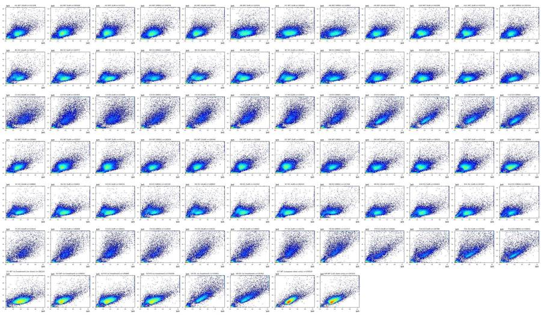
20
tool call · Bash
cd /task; python3 scripts/overview.py FSC-A FSC-H lin,lin work/ov_fsc_h.png; python3 scripts/overview.py BL1-A BL2-A asinh,asinh work/ov_bl.png
21
tool call · Read
{
"file_path": "/task/work/ov_fsc_h.png"
}22
tool output
(Bash completed with no output)
23
tool output
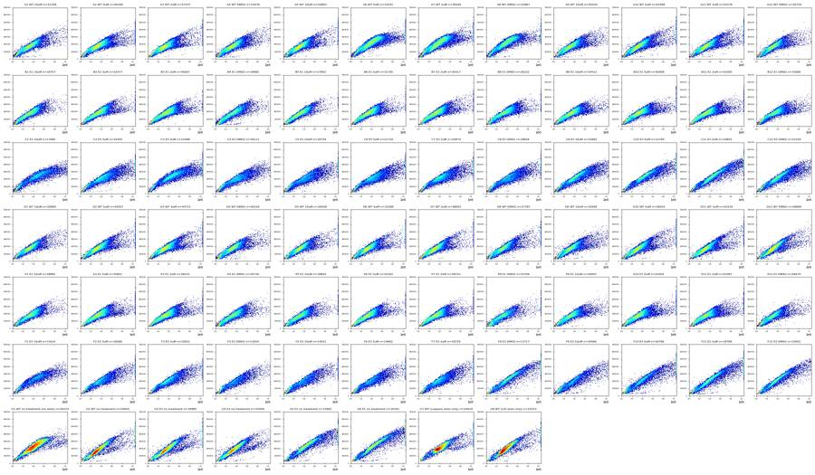
25
tool call · Read
{
"file_path": "/task/work/ov_bl.png"
}26
tool output
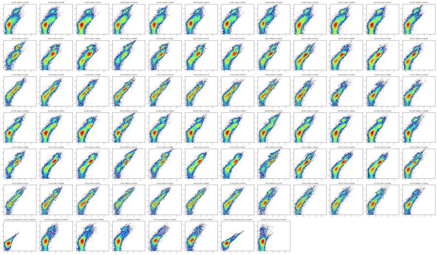
28
tool call · Bash
cd /task; cat > scripts/comp.py <<'EOF'
import flowkit as fk, pandas as pd, numpy as np
def load(w):
s=fk.Sample(f'inputs/raw/Caspase-assay-2-mlk_caspase_Group_{w}.fcs')
return pd.DataFrame(s.get_events(source='raw'),columns=s.pnn_labels)
g1,g7,g8=load('G1'),load('G7'),load('G8')
def basic(d):
m=(d['FSC-A']>80000)&(d['FSC-A']<1e6)&(d['SSC-A']<1e6)&(d['SSC-A']>20000)
r=d['FSC-H']/d['FSC-A']
return d[m]
for name,d in [('G1',g1),('G7',g7),('G8',g8)]:
d=basic(d)
print(name,len(d), 'BL1 pct',np.percentile(d['BL1-A'],[1,50,90,99,99.9]).round(0),'BL2 pct',np.percentile(d['BL2-A'],[1,50,90,99,99.9]).round(0))
# spill BL1->BL2 from G7: robust regression on BL1-bright
d=basic(g7); u=basic(g1)
bl1_0=np.median(u['BL1-A']); bl2_0=np.median(u['BL2-A'])
pos=d[d['BL1-A']>3000]
print('G7 pos n',len(pos))
s12=np.median((pos['BL2-A']-bl2_0)/(pos['BL1-A']-bl1_0))
# alternative: median of pos minus median of neg
neg=d[d['BL1-A']<500]
s12b=(np.median(pos['BL2-A'])-np.median(neg['BL2-A']))/(np.median(pos['BL1-A'])-np.median(neg['BL1-A']))
print('spill BL1->BL2',s12,s12b)
d=basic(g8)
pos=d[d['BL2-A']>20000]; neg=d[d['BL2-A']<3000]
print('G8 pos n',len(pos))
s21=(np.median(pos['BL1-A'])-np.median(neg['BL1-A']))/(np.median(pos['BL2-A'])-np.median(neg['BL2-A']))
print('spill BL2->BL1',s21, np.median(pos['BL1-A']),np.median(neg['BL1-A']),np.median(pos['BL2-A']))
EOF
python3 scripts/comp.py29
tool output
G1 24520 BL1 pct [-94. 93. 214. 394. 796.] BL2 pct [ 6. 370. 753. 1870. 4072.] G7 22431 BL1 pct [ -68. 139. 350. 8902. 21681.] BL2 pct [ 24. 413. 972. 8365. 19794.] G8 23015 BL1 pct [-84. 110. 233. 429. 860.] BL2 pct [ -997. 559. 2342. 76175. 215328.] G7 pos n 627 spill BL1->BL2 0.9022338265158109 0.8938911407064273 G8 pos n 769 spill BL2->BL1 0.0003875968992248062 129.0 108.0 54669.0
31
tool call · Bash
cd /task; python3 -c "
import flowkit as fk, inspect
print(fk.__version__)
print(inspect.signature(fk.Matrix.__init__))
print(inspect.signature(fk.GatingStrategy.add_comp_matrix))
print(inspect.signature(fk.GatingStrategy.add_gate))
print(inspect.signature(fk.Dimension.__init__))
print(inspect.signature(fk.gates.PolygonGate.__init__))
print(inspect.signature(fk.gates.RectangleGate.__init__))
print(inspect.signature(fk.transforms.LogicleTransform.__init__))
print(inspect.signature(fk.transforms.AsinhTransform.__init__))
print([x for x in dir(fk.transforms) if not x.startswith('_')])
"32
tool output
1.2.3 (self, spill_data_or_file, detectors, fluorochromes=None, null_channels=None) (self, matrix_id, matrix) (self, gate, gate_path, sample_id=None) (self, dimension_id, compensation_ref='uncompensated', transformation_ref=None, range_min=None, range_max=None) (self, gate_name, dimensions, vertices, use_complement=False) (self, gate_name, dimensions, use_complement=False) (self, param_t, param_w, param_m, param_a) (self, param_t, param_m, param_a) ['AsinhTransform', 'HyperlogTransform', 'LinearTransform', 'LogTransform', 'LogicleTransform', 'RatioTransform', 'WSPBiexTransform', 'WSPLogTransform']
34
tool call · Bash
cd /task; cat > scripts/zoom.py <<'EOF'
import flowkit as fk, pandas as pd, numpy as np, matplotlib, sys
matplotlib.use('Agg'); import matplotlib.pyplot as plt
from matplotlib.colors import LogNorm
wells=sys.argv[1].split(','); xc,yc=sys.argv[2],sys.argv[3]; xr=tuple(map(float,sys.argv[4].split(':'))); yr=tuple(map(float,sys.argv[5].split(':'))); out=sys.argv[6]
n=len(wells); fig,axes=plt.subplots(1,n,figsize=(5*n,4.5))
for ax,w in zip(np.atleast_1d(axes),wells):
s=fk.Sample(f'inputs/raw/Caspase-assay-2-mlk_caspase_Group_{w}.fcs')
d=pd.DataFrame(s.get_events(source='raw'),columns=s.pnn_labels)
ax.hist2d(d[xc],d[yc],bins=200,range=[xr,yr],norm=LogNorm(),cmap='jet')
ax.set_title(w); ax.set_xlabel(xc); ax.set_ylabel(yc); ax.grid(alpha=.3)
plt.tight_layout(); plt.savefig(out,dpi=60)
EOF
python3 scripts/zoom.py A1,B9,C1,F8,G1 FSC-A SSC-A 0:400000 0:300000 work/z1.png35
tool output
(Bash completed with no output)
36
agent
Zooming into the low-scatter region to place the debris cut.
37
tool call · Read
{
"file_path": "/task/work/z1.png"
}38
tool output
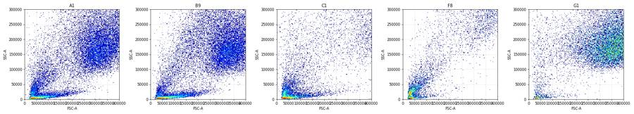
40
tool call · Bash
cd /task; cat > scripts/explore2.py <<'EOF'
import flowkit as fk, pandas as pd, numpy as np, matplotlib, sys
matplotlib.use('Agg'); import matplotlib.pyplot as plt
from matplotlib.colors import LogNorm
wells=sys.argv[1].split(','); out=sys.argv[2]
def asinh(v,c=150.): return np.arcsinh(v/c)
fig,axes=plt.subplots(3,len(wells),figsize=(4.5*len(wells),13))
for j,w in enumerate(wells):
s=fk.Sample(f'inputs/raw/Caspase-assay-2-mlk_caspase_Group_{w}.fcs')
d=pd.DataFrame(s.get_events(source='raw'),columns=s.pnn_labels)
bl1=d['BL1-A'].values; bl2=d['BL2-A'].values-0.90*bl1
d['cBL2']=bl2
dead=asinh(bl2)>5.0
ax=axes[0,j]; ax.scatter(d['FSC-A'][~dead],d['SSC-A'][~dead],s=1,c='grey',alpha=.2); ax.scatter(d['FSC-A'][dead],d['SSC-A'][dead],s=1,c='r',alpha=.3); ax.set_xlim(0,1.05e6); ax.set_ylim(0,1.05e6); ax.set_title(w+' red=cBL2 high')
ax=axes[1,j]; ax.hist2d(asinh(bl1),asinh(bl2),bins=150,range=[[-2,9],[-5,9]],norm=LogNorm(),cmap='jet'); ax.set_xlabel('asinh BL1 caspase'); ax.set_ylabel('asinh compBL2')
m=(d['FSC-A']>80000)
ax=axes[2,j]; ax.hist2d(asinh(bl1[m]),asinh(bl2[m]),bins=150,range=[[-2,9],[-5,9]],norm=LogNorm(),cmap='jet'); ax.set_title('FSC>80k')
plt.tight_layout(); plt.savefig(out,dpi=55)
EOF
python3 scripts/explore2.py A1,A4,A12,B1,B12,C1,G7,G8 work/e2.png41
tool output
(Bash completed with no output)
42
tool call · Read
{
"file_path": "/task/work/e2.png"
}43
tool output
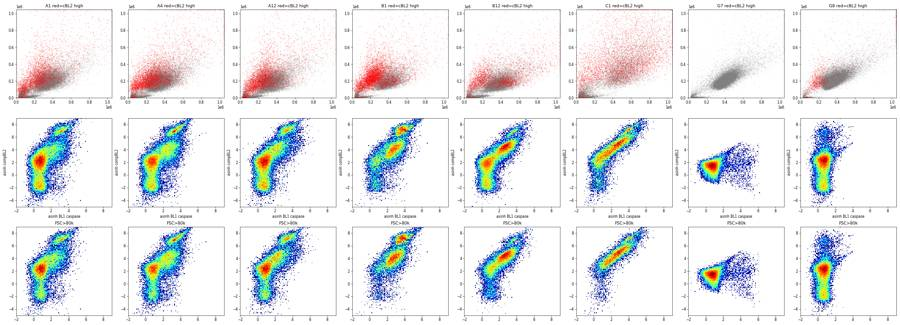
45
tool call · Bash
cd /task; cat > scripts/explore3.py <<'EOF'
import flowkit as fk, pandas as pd, numpy as np, matplotlib, sys
matplotlib.use('Agg'); import matplotlib.pyplot as plt
from matplotlib.colors import LogNorm
wells=sys.argv[1].split(','); out=sys.argv[2]
def asinh(v,c=150.): return np.arcsinh(v/c)
fig,axes=plt.subplots(4,len(wells),figsize=(4.5*len(wells),17))
for j,w in enumerate(wells):
s=fk.Sample(f'inputs/raw/Caspase-assay-2-mlk_caspase_Group_{w}.fcs')
d=pd.DataFrame(s.get_events(source='raw'),columns=s.pnn_labels)
d=d[d['FSC-A']>80000]
bl1=d['BL1-A'].values; bl2=d['BL2-A'].values-0.90*bl1
neg=bl2< -100
ax=axes[0,j]; ax.hist2d(d['Time'],asinh(bl2),bins=[100,150],range=[[0,17],[-5,9]],norm=LogNorm(),cmap='jet'); ax.set_title(w+' time vs cBL2')
ax=axes[1,j]; ax.scatter(d['FSC-A'][~neg],d['SSC-A'][~neg],s=1,c='grey',alpha=.2); ax.scatter(d['FSC-A'][neg],d['SSC-A'][neg],s=1,c='b',alpha=.3); ax.set_xlim(0,1.05e6); ax.set_ylim(0,1.05e6); ax.set_title('blue=cBL2<-100 %.1f%%'%(neg.mean()*100))
ax=axes[2,j]; ax.hist2d(asinh(d['BL2-H']),asinh(d['BL2-A']),bins=150,range=[[-5,9],[-5,9]],norm=LogNorm(),cmap='jet'); ax.set_xlabel('BL2-H'); ax.set_ylabel('BL2-A')
ax=axes[3,j]; ax.hist2d(d['FSC-A'],d['BL2-W'],bins=150,range=[[0,1.05e6],[0,1024]],norm=LogNorm(),cmap='jet'); ax.set_xlabel('FSC-A'); ax.set_ylabel('BL2-W')
plt.tight_layout(); plt.savefig(out,dpi=55)
EOF
python3 scripts/explore3.py A1,A4,B12,G1,G7,G8 work/e3.png46
tool output
(Bash completed with no output)
47
tool call · Read
{
"file_path": "/task/work/e3.png"
}48
tool output
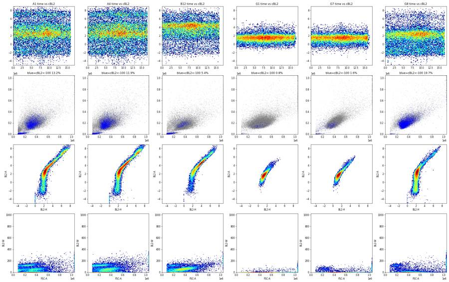
50
tool call · Bash
cd /task; cat > scripts/pool.py <<'EOF'
import flowkit as fk, pandas as pd, numpy as np
lay=pd.read_csv('inputs/plate_layout.csv')
ds=[]
for f,w in zip(lay.file,lay.well):
s=fk.Sample('inputs/raw/'+f)
d=pd.DataFrame(s.get_events(source='raw'),columns=s.pnn_labels)
d['well']=w
ds.append(d)
D=pd.concat(ds,ignore_index=True)
D.to_parquet('work/all_raw.parquet') if False else D.to_pickle('work/all_raw.pkl')
print(len(D))
EOF
python3 scripts/pool.py51
tool output
2219741
52
agent
Pooled all 80 files; now drawing the singlet gate on pooled FSC-A vs FSC-H.
53
tool call · Bash
cd /task; cat > scripts/singlet_view.py <<'EOF'
import pandas as pd, numpy as np, matplotlib
matplotlib.use('Agg'); import matplotlib.pyplot as plt
from matplotlib.colors import LogNorm
D=pd.read_pickle('work/all_raw.pkl')
m=(D['FSC-A']>80000)&(D['FSC-A']<1040000)&(D['SSC-A']<1040000)&(D['SSC-A']>25000)
d=D[m]
fig,axes=plt.subplots(1,3,figsize=(21,7))
ax=axes[0]; ax.hist2d(d['FSC-A'],d['FSC-H'],bins=300,range=[[0,1.05e6],[0,7e5]],norm=LogNorm(),cmap='jet'); ax.grid(alpha=.4)
ax.set_xticks(np.arange(0,1.05e6,1e5)); ax.set_yticks(np.arange(0,7e5,5e4))
r=d['FSC-H']/d['FSC-A']
ax=axes[1]; ax.hist2d(d['FSC-A'],r,bins=300,range=[[0,1.05e6],[0,1.0]],norm=LogNorm(),cmap='jet'); ax.grid(alpha=.4); ax.set_ylabel('H/A')
ax.set_xticks(np.arange(0,1.05e6,1e5))
ax=axes[2]; ax.hist2d(D['FSC-A'],D['SSC-A'],bins=300,range=[[0,3e5],[0,3e5]],norm=LogNorm(),cmap='jet'); ax.grid(alpha=.4)
plt.tight_layout(); plt.savefig('work/singlet_pool.png',dpi=60)
EOF
python3 scripts/singlet_view.py54
tool output
(Bash completed with no output)
55
tool call · Read
{
"file_path": "/task/work/singlet_pool.png"
}56
tool output
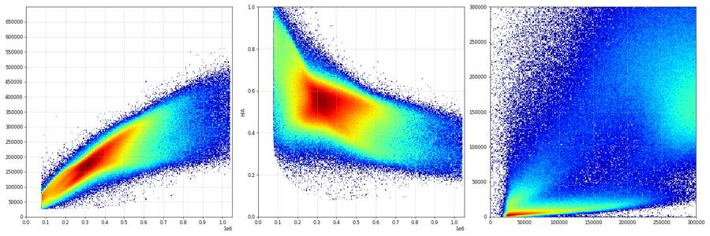
58
tool call · Bash
cd /task; cat > scripts/singlet_view2.py <<'EOF'
import pandas as pd, numpy as np, matplotlib
matplotlib.use('Agg'); import matplotlib.pyplot as plt
from matplotlib.colors import LogNorm
D=pd.read_pickle('work/all_raw.pkl')
lay=pd.read_csv('inputs/plate_layout.csv').set_index('well')
D['line']=D['well'].map(lay['cell_line'])
m=(D['FSC-A']>80000)&(D['FSC-A']<1040000)&(D['SSC-A']<1040000)&(D['SSC-A']>25000)
d=D[m]
poly=np.array([(75000,30000),(300000,135000),(500000,205000),(700000,262000),(1040000,350000),(1040000,700000),(75000,700000)])
cellpoly=np.array([(75000,25000),(1040000,25000),(1040000,1040000),(75000,1040000)])
fig,axes=plt.subplots(2,3,figsize=(21,13))
for j,l in enumerate(['WT','E1','E3']):
dd=d[d.line==l]
ax=axes[0,j]; ax.hist2d(dd['FSC-A'],dd['FSC-H'],bins=300,range=[[0,1.05e6],[0,7e5]],norm=LogNorm(),cmap='jet'); ax.grid(alpha=.4)
ax.plot(*np.vstack([poly,poly[:1]]).T,'k-'); ax.set_title(l)
dd=D[D.line==l]
ax=axes[1,j]; ax.hist2d(dd['FSC-A'],dd['SSC-A'],bins=300,range=[[0,1.05e6],[0,1.05e6]],norm=LogNorm(),cmap='jet'); ax.grid(alpha=.4)
ax.plot(*np.vstack([cellpoly,cellpoly[:1]]).T,'k-')
plt.tight_layout(); plt.savefig('work/singlet_line.png',dpi=55)
EOF
python3 scripts/singlet_view2.py59
tool output
(Bash completed with no output)
60
tool call · Read
{
"file_path": "/task/work/singlet_line.png"
}61
tool output
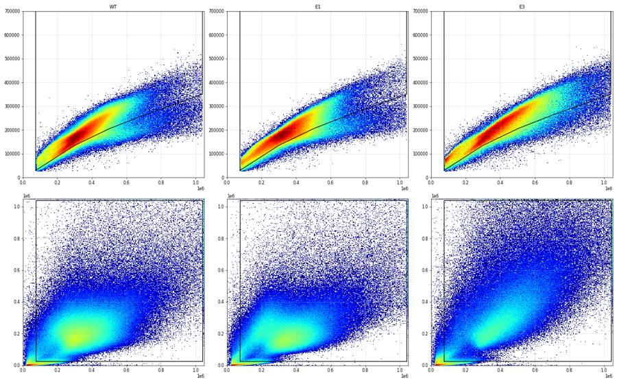
63
tool call · Bash
cd /task; cat > scripts/fl_overview.py <<'EOF'
import pandas as pd, numpy as np, matplotlib, sys
matplotlib.use('Agg'); import matplotlib.pyplot as plt
from matplotlib.colors import LogNorm
from matplotlib.path import Path
D=pd.read_pickle('work/all_raw.pkl')
lay=pd.read_csv('inputs/plate_layout.csv').set_index('well')
S=float(sys.argv[1]) if len(sys.argv)>1 else 0.9
cellpoly=Path([(75000,25000),(1040000,25000),(1040000,1040000),(75000,1040000)])
sp=Path([(75000,30000),(300000,135000),(500000,215000),(700000,280000),(1040000,380000),(1040000,700000),(75000,700000)])
m=cellpoly.contains_points(D[['FSC-A','SSC-A']].values)
D=D[m]; m=sp.contains_points(D[['FSC-A','FSC-H']].values); D=D[m]
D['cBL1']=D['BL1-A']-0.0004*D['BL2-A']; D['cBL2']=D['BL2-A']-S*D['BL1-A']
D.to_pickle('work/singlets.pkl')
a=lambda v: np.arcsinh(v/150.)
fig,axes=plt.subplots(7,12,figsize=(36,21))
for ax in axes.flat: ax.axis('off')
for w,g in D.groupby('well'):
r='ABCDEFG'.index(w[0]); c=int(w[1:])-1; ax=axes[r,c]; ax.axis('on')
ax.hist2d(a(g.cBL1),a(g.cBL2),bins=120,range=[[-2,9],[-5,9]],norm=LogNorm(),cmap='jet')
ax.axvline(a(1000),color='k',lw=.8); ax.axhline(a(15000),color='k',lw=.8)
ax.set_title(f"{w} {lay.loc[w,'sample']} {lay.loc[w,'conditioned_media'][:7]} n={len(g)}",fontsize=8)
plt.tight_layout(); plt.savefig('work/fl_overview.png',dpi=50)
EOF
python3 scripts/fl_overview.py64
tool output
(Bash completed with no output)
65
tool call · Read
{
"file_path": "/task/work/fl_overview.png"
}66
tool output
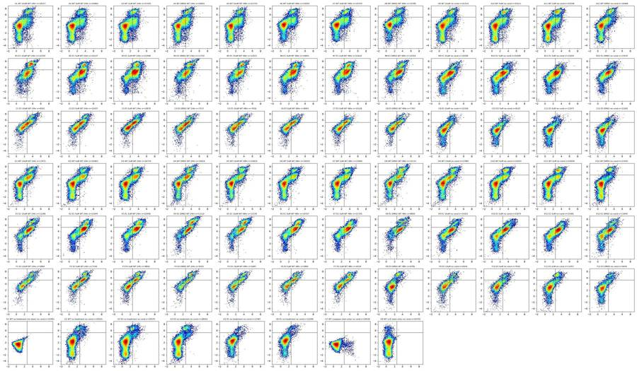
68
tool call · Bash
cd /task; python3 -c "
import pandas as pd, numpy as np
D=pd.read_pickle('work/singlets.pkl')
for w in ['G1','G7','G8','G2','A12','D12','B12','E12','C12','F12']:
g=D[D.well==w]
print(w,len(g),'cBL1 pct 50/95/99/99.5/99.9',np.percentile(g.cBL1,[50,95,99,99.5,99.9]).round(0),' cBL2',np.percentile(g.cBL2,[50,95,99,99.5,99.9]).round(0))
"
69
tool output
G1 23491 cBL1 pct 50/95/99/99.5/99.9 [ 91. 246. 356. 428. 778.] cBL2 [ 289. 762. 1344. 1700. 3059.] G7 20032 cBL1 pct 50/95/99/99.5/99.9 [ 133. 473. 4659. 7147. 11107.] cBL2 [ 281. 751. 1275. 1609. 2669.] G8 20702 cBL1 pct 50/95/99/99.5/99.9 [107. 271. 410. 512. 814.] cBL2 [ 442. 4156. 58009. 80641. 138459.] G2 20525 cBL1 pct 50/95/99/99.5/99.9 [ 153. 971. 3372. 4196. 6928.] cBL2 [ 588. 34229. 93175. 109427. 176591.] A12 16466 cBL1 pct 50/95/99/99.5/99.9 [ 240. 3020. 6213. 7952. 14600.] cBL2 [ 1174. 100802. 174889. 205204. 298925.] D12 21050 cBL1 pct 50/95/99/99.5/99.9 [ 176. 2014. 3902. 5074. 9385.] cBL2 [ 622. 78023. 138322. 159922. 234748.] B12 13534 cBL1 pct 50/95/99/99.5/99.9 [ 831. 3235. 6138. 8190. 17439.] cBL2 [ 4038. 43395. 100843. 134539. 211645.] E12 11940 cBL1 pct 50/95/99/99.5/99.9 [ 863. 4817. 9860. 13123. 23417.] cBL2 [ 3719. 73851. 156822. 196735. 285504.] C12 12165 cBL1 pct 50/95/99/99.5/99.9 [ 272. 1940. 4230. 5718. 10531.] cBL2 [ 1240. 18774. 69903. 93328. 164821.] F12 9444 cBL1 pct 50/95/99/99.5/99.9 [ 251. 2279. 4604. 6169. 12872.] cBL2 [ 1161. 61665. 122829. 148110. 198034.]
71
tool call · Bash
cd /task; cat > scripts/hist_bl2.py <<'EOF'
import pandas as pd, numpy as np, matplotlib
matplotlib.use('Agg'); import matplotlib.pyplot as plt
D=pd.read_pickle('work/singlets.pkl')
lay=pd.read_csv('inputs/plate_layout.csv').set_index('well')
D['line']=D.well.map(lay.cell_line)
a=lambda v: np.arcsinh(v/150.)
fig,axes=plt.subplots(1,3,figsize=(20,5))
bins=np.linspace(-5,9,200)
for l in ['WT','E1','E3']:
g=D[(D.line==l)&(~D.well.str.startswith('G'))]
axes[0].hist(a(g.cBL2),bins=bins,histtype='step',label=l,density=True)
axes[1].hist(a(g.cBL2[g.cBL1>1000]),bins=bins,histtype='step',label=l+' casp+',density=True)
axes[2].hist(a(g.cBL1),bins=bins,histtype='step',label=l,density=True)
for w in ['G1','G8','G7']:
g=D[D.well==w]; axes[2].hist(a(g.cBL1),bins=bins,histtype='step',label=w,density=True,ls='--')
axes[0].hist(a(g.cBL2),bins=bins,histtype='step',label=w,density=True,ls='--')
for ax in axes: ax.legend(); ax.grid(alpha=.3); ax.set_xticks(np.arange(-5,10,0.5)); ax.tick_params(labelsize=7)
for v in [5.3,5.8,6.0]: axes[1].axvline(v,color='k',lw=.5)
axes[2].axvline(a(1000),color='k',lw=.5)
plt.tight_layout(); plt.savefig('work/hist_bl2.png',dpi=60)
print('asinh->raw', {x: round(150*np.sinh(x)) for x in [5.0,5.3,5.5,5.8,6.0,6.2]})
EOF
python3 scripts/hist_bl2.py72
tool output
asinh->raw {5.0: 11130, 5.3: 15025, 5.5: 18352, 5.8: 24772, 6.0: 30257, 6.2: 36956}73
tool call · Read
{
"file_path": "/task/work/hist_bl2.png"
}74
tool output
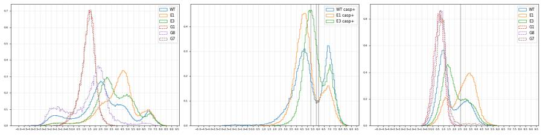
76
tool call · Bash
cd /task; python3 -c "
import pandas as pd, numpy as np
D=pd.read_pickle('work/singlets.pkl')
g=D[D.well=='G7']
for lo in [1000,2000,4000]:
p=g[g['BL1-A']>lo]; n=g[g['BL1-A']<400]
s=(p['BL2-A'].median()-n['BL2-A'].median())/(p['BL1-A'].median()-n['BL1-A'].median())
# regression through neg centroid
x=p['BL1-A']-n['BL1-A'].median(); y=p['BL2-A']-n['BL2-A'].median()
print(lo,len(p),round(s,3), round((x*y).sum()/(x*x).sum(),3), round(np.median(y/x),3))
g=D[D.well=='G8']
p=g[g['BL2-A']>30000]; n=g[g['BL2-A']<2000]
print('G8',len(p),(p['BL1-A'].median()-n['BL1-A'].median())/(p['BL2-A'].median()-n['BL2-A'].median()))
"
77
tool output
1000 612 0.952 0.89 0.886 2000 421 0.9 0.886 0.885 4000 232 0.899 0.882 0.884 G8 413 0.00025943477809678645
79
tool call · Bash
cd /task; cat > scripts/prelim.py <<'EOF'
import pandas as pd, numpy as np
D=pd.read_pickle('work/singlets.pkl')
lay=pd.read_csv('inputs/plate_layout.csv').set_index('well')
D['cBL1']=D['BL1-A']-0.0003*D['BL2-A']; D['cBL2']=D['BL2-A']-0.89*D['BL1-A']
res=[]
for w,g in D.groupby('well'):
live=g.cBL2<30000
res.append(dict(well=w,sing=len(g),pct_dead=100*(~live).mean(),casp_live=100*(g.cBL1[live]>1000).mean(),casp_all=100*(g.cBL1>1000).mean()))
r=pd.DataFrame(res).set_index('well').join(lay[['cell_line','camptothecin','conditioned_media']])
r['cm']=r.conditioned_media.str[:5]
pd.set_option('display.width',200)
r['row']=r.index.str[0]
for metric in ['casp_live','casp_all','pct_dead']:
print(metric)
t=r[~r.index.str.startswith('G')].pivot_table(index=['cell_line','row'],columns=['cm','camptothecin'],values=metric)
print(t.round(1).to_string())
print(r[r.index.str.startswith('G')].round(1))
r.to_csv('work/prelim.csv')
EOF
python3 scripts/prelim.py80
tool output
casp_live
cm WT 24 WT 48 no co
camptothecin 10uM 2uM 5uM DMSO 10uM 2uM 5uM DMSO 10uM 2uM 5uM DMSO
cell_line row
E1 B 48.5 63.1 57.1 48.9 52.0 61.1 57.1 58.4 37.3 45.0 37.7 38.4
E 59.3 70.9 69.9 67.7 61.8 69.1 67.4 61.7 48.0 57.4 49.8 40.2
E3 C 36.4 33.7 39.5 35.6 28.7 29.2 34.1 26.8 9.6 7.4 7.3 11.8
F 31.1 32.0 40.0 37.3 27.9 31.4 34.8 2.9 16.5 7.9 12.6 8.7
WT A 12.1 16.4 16.7 19.7 16.8 16.0 16.8 16.7 12.5 13.8 12.8 12.2
D 27.4 24.5 21.7 28.2 20.7 19.2 20.0 25.2 19.2 16.0 16.2 6.0
casp_all
cm WT 24 WT 48 no co
camptothecin 10uM 2uM 5uM DMSO 10uM 2uM 5uM DMSO 10uM 2uM 5uM DMSO
cell_line row
E1 B 62.6 68.2 62.5 60.3 62.0 67.4 63.0 64.0 40.8 47.9 39.7 42.2
E 66.5 75.5 74.0 77.2 72.7 72.8 73.3 69.4 53.0 59.5 53.1 46.5
E3 C 45.0 40.3 45.7 43.0 36.1 32.6 39.0 33.4 13.3 9.1 9.8 14.0
F 44.1 43.8 50.7 53.4 39.4 44.3 46.5 13.9 25.2 17.4 20.0 15.3
WT A 19.2 20.9 21.3 27.7 23.1 22.2 22.2 25.3 19.9 22.6 20.7 22.4
D 34.0 30.5 27.2 38.2 29.1 26.7 25.9 37.5 27.7 26.0 25.3 13.4
pct_dead
cm WT 24 WT 48 no co
camptothecin 10uM 2uM 5uM DMSO 10uM 2uM 5uM DMSO 10uM 2uM 5uM DMSO
cell_line row
E1 B 28.3 14.7 13.4 23.0 21.4 16.6 14.1 13.5 5.7 5.3 3.3 6.6
E 17.8 15.8 13.7 29.4 28.6 12.0 18.1 20.3 9.7 4.8 6.6 10.9
E3 C 13.6 10.2 10.4 11.5 10.5 5.0 7.7 9.4 4.7 2.7 3.2 3.0
F 19.1 17.7 18.0 25.8 16.1 19.1 18.1 14.4 10.8 12.1 9.4 8.7
WT A 10.9 8.9 8.0 11.8 9.6 9.5 8.5 12.2 9.8 12.3 11.4 13.0
D 9.3 8.4 7.3 14.3 10.9 10.0 7.8 16.7 10.9 12.4 11.4 10.2
sing pct_dead casp_live ... conditioned_media cm row
well ...
G1 23491 0.0 0.1 ... no conditioned media no co G
G2 20525 5.4 2.4 ... no conditioned media no co G
G3 29479 6.1 3.7 ... no conditioned media no co G
G4 28003 6.1 4.0 ... no conditioned media no co G
G5 11467 2.3 2.4 ... no conditioned media no co G
G6 12290 4.8 2.0 ... no conditioned media no co G
G7 20032 0.0 3.1 ... no conditioned media no co G
G8 20702 2.0 0.0 ... no conditioned media no co G
[8 rows x 9 columns]82
tool call · Bash
cd /task; python3 scripts/explore2.py C8,F4,F7,F8,F12,D12,A12 work/e2b.png; python3 scripts/zoom.py C8,F7,F8,F12 FSC-A SSC-A 0:1050000 0:1050000 work/z2.png
83
tool call · Read
{
"file_path": "/task/work/e2b.png"
}84
tool output
(Bash completed with no output)
85
tool output
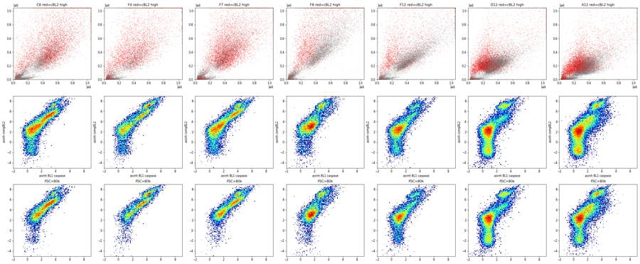
87
tool call · Read
{
"file_path": "/task/work/z2.png"
}88
tool output
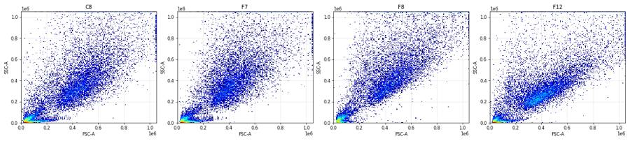
90
tool call · Bash
cd /task; cat > scripts/features.py <<'EOF'
import pandas as pd, numpy as np
D=pd.read_pickle('work/singlets.pkl')
A=pd.read_pickle('work/all_raw.pkl')
lay=pd.read_csv('inputs/plate_layout.csv').set_index('well')
D['cBL1']=D['BL1-A']-0.0003*D['BL2-A']; D['cBL2']=D['BL2-A']-0.89*D['BL1-A']
rows=[]
for w,g in D.groupby('well'):
live=g[g.cBL2<30000]; neg=live[live.cBL1<1000]
a=A[A.well==w]
rows.append(dict(well=w, n_all=len(a), pct_singlets_of_all=100*len(g)/len(a),
fsc=np.median(g['FSC-A']), ssc=np.median(g['SSC-A']), lr=np.median(np.log(g['SSC-A']/g['FSC-A'])),
corr=np.corrcoef(g['FSC-A'],g['SSC-A'])[0,1], sscsat=100*(a['SSC-A']>=1048575).mean(), fscsat=100*(a['FSC-A']>=1048575).mean(),
hw=np.median(g['FSC-H']/g['FSC-A']), negBL1=np.median(neg.cBL1), negBL2=np.median(neg.cBL2),
casp_live=100*(live.cBL1>1000).mean(), debris=100*((a['FSC-A']<75000)|(a['SSC-A']<25000)).mean()))
F=pd.DataFrame(rows).set_index('well').join(lay[['cell_line','camptothecin','conditioned_media']])
F['cm']=F.conditioned_media.str[:5]
pd.set_option('display.width',250); pd.set_option('display.max_rows',100)
print(F.round(3).to_string())
F.to_csv('work/features.csv')
EOF
python3 scripts/features.py91
tool output
n_all pct_singlets_of_all fsc ssc lr corr sscsat fscsat hw negBL1 negBL2 casp_live debris cell_line camptothecin conditioned_media cm well A1 31328 58.468 320023.0 188860.0 -0.544 0.483 0.769 0.846 0.541 158.828 675.300 12.113 31.841 WT 10uM WT 24hr conditioned media WT 24 A10 42298 59.603 314829.0 193175.0 -0.528 0.477 0.723 0.953 0.533 160.949 547.360 12.757 29.857 WT 5uM no conditioned media no co A11 43376 58.440 316156.0 191369.0 -0.550 0.431 0.735 0.851 0.537 160.714 535.740 13.838 31.734 WT 2uM no conditioned media no co A12 30724 53.593 308757.0 184685.5 -0.534 0.437 0.902 0.967 0.546 177.952 749.850 12.238 34.855 WT DMSO no conditioned media no co A2 40169 61.893 324415.0 196335.5 -0.520 0.499 0.695 0.570 0.544 153.445 587.270 16.657 26.946 WT 5uM WT 24hr conditioned media WT 24 A3 47337 57.957 300941.0 195303.0 -0.465 0.517 0.608 0.429 0.540 155.835 576.770 16.421 31.221 WT 2uM WT 24hr conditioned media WT 24 A4 33079 62.278 312851.0 185210.0 -0.544 0.482 1.082 0.949 0.547 177.134 641.680 19.651 26.261 WT DMSO WT 24hr conditioned media WT 24 A5 34963 62.160 303248.0 193218.0 -0.491 0.483 0.818 0.701 0.540 164.261 589.630 16.803 26.697 WT 10uM WT 48hr conditioned media WT 48 A6 33431 68.960 387943.0 204897.5 -0.663 0.313 0.796 1.143 0.568 163.400 1056.570 16.802 22.500 WT 5uM WT 48hr conditioned media WT 48 A7 36445 69.612 378189.5 202806.5 -0.645 0.348 0.642 0.823 0.559 161.648 988.440 16.025 22.148 WT 2uM WT 48hr conditioned media WT 48 A8 22867 69.030 392304.0 200869.0 -0.676 0.305 1.299 1.513 0.567 169.851 1088.970 16.716 22.399 WT DMSO WT 48hr conditioned media WT 48 A9 40034 53.240 309380.0 180865.5 -0.560 0.478 0.789 0.924 0.541 174.760 651.015 12.527 36.374 WT 10uM no conditioned media no co B1 18757 65.735 322492.0 209357.0 -0.427 0.221 0.395 0.283 0.553 528.630 1685.170 48.513 22.664 E1 10uM WT 24hr conditioned media WT 24 B10 40098 55.576 327532.0 178951.0 -0.622 0.328 0.327 0.601 0.553 347.724 1205.050 37.707 33.984 E1 5uM no conditioned media no co B11 41005 52.808 324343.5 163645.5 -0.719 0.357 0.134 0.441 0.562 386.534 1423.765 45.027 38.293 E1 2uM no conditioned media no co B12 31680 42.721 339170.0 172711.5 -0.699 0.401 0.265 0.720 0.551 427.771 2031.960 38.404 46.739 E1 DMSO no conditioned media no co B2 32477 61.912 342339.0 186112.0 -0.659 0.215 0.132 0.360 0.549 339.659 1097.140 57.055 27.894 E1 5uM WT 24hr conditioned media WT 24 B3 40067 58.422 343808.0 177079.5 -0.714 0.233 0.095 0.270 0.549 360.380 1317.410 63.061 31.313 E1 2uM WT 24hr conditioned media WT 24 B4 19965 58.618 330410.0 201402.0 -0.494 0.254 1.002 0.626 0.549 487.237 1749.920 48.902 28.645 E1 DMSO WT 24hr conditioned media WT 24 B5 17852 70.138 318894.0 203414.0 -0.442 0.283 0.118 0.185 0.554 508.673 1951.180 52.012 19.572 E1 10uM WT 48hr conditioned media WT 48 B6 31705 62.580 333494.0 188545.0 -0.600 0.236 0.136 0.353 0.551 370.098 1405.460 57.144 26.844 E1 5uM WT 48hr conditioned media WT 48 B7 35417 61.016 333080.0 186764.5 -0.625 0.291 0.107 0.325 0.556 366.026 1589.360 61.070 29.720 E1 2uM WT 48hr conditioned media WT 48 B8 26222 54.988 341909.0 186692.0 -0.616 0.310 0.294 0.469 0.547 412.083 1796.805 58.419 32.755 E1 DMSO WT 48hr conditioned media WT 48 B9 34411 55.764 326034.0 183659.0 -0.589 0.358 0.244 0.593 0.551 340.333 1268.580 37.283 33.786 E1 10uM no conditioned media no co C1 17681 50.908 455281.0 312822.0 -0.365 0.508 3.631 2.992 0.525 388.346 2708.530 36.383 32.476 E3 10uM WT 24hr conditioned media WT 24 C10 15794 57.661 454262.0 315108.0 -0.384 0.743 5.255 3.698 0.527 249.782 1023.230 7.302 27.175 E3 5uM no conditioned media no co C11 19854 60.325 464931.0 334608.0 -0.351 0.719 5.384 5.309 0.514 247.066 954.520 7.373 24.544 E3 2uM no conditioned media no co C12 23104 52.653 416669.0 282493.0 -0.405 0.732 3.515 2.610 0.536 237.148 1026.380 11.840 33.678 E3 DMSO no conditioned media no co C2 25455 41.002 407818.0 317464.0 -0.251 0.669 3.583 1.878 0.530 381.801 2006.070 39.540 43.111 E3 5uM WT 24hr conditioned media WT 24 C3 21098 51.559 458754.0 343561.0 -0.285 0.474 3.754 3.048 0.526 354.264 2383.140 33.657 33.558 E3 2uM WT 24hr conditioned media WT 24 C4 18113 41.501 384372.0 3018 … [9,251 more characters not shown]
93
tool call · Bash
cd /task; cat > scripts/timecheck.py <<'EOF'
import pandas as pd, numpy as np
A=pd.read_pickle('work/all_raw.pkl')
rows=[]
for w,g in A.groupby('well',sort=False):
t=g.Time.values; tmax=t.max()
bins=np.arange(0,np.ceil(tmax)+1,1.0)
h,_=np.histogram(t,bins=bins)
h=h[:-1] if h[-1]< h.mean()*0.5 else h # drop partial last bin
# median FSC per 2s bin
tb=np.digitize(t,np.arange(0,tmax+2,2))
cells=(g['FSC-A']>75000)
medf=[np.median(g['FSC-A'][(tb==k)&cells]) for k in np.unique(tb)]
medb=[np.median(g['BL1-A'][(tb==k)&cells]) for k in np.unique(tb)]
gaps=np.diff(np.sort(t)).max()
rows.append(dict(well=w,dur=tmax,rate_mean=h.mean(),rate_cv=h.std()/h.mean(),rate_min_rel=h.min()/np.median(h),rate_max_rel=h.max()/np.median(h),first_last=h[-1]/h[0] if h[0]>0 else np.nan,maxgap=gaps,fsc_drift=(max(medf)-min(medf))/np.median(medf),bl1_drift=(max(medb)-min(medb))/np.median(medb)))
R=pd.DataFrame(rows)
pd.set_option('display.width',200); pd.set_option('display.max_rows',100)
print(R.round(3).to_string())
R.to_csv('work/timecheck.csv',index=False)
EOF
python3 scripts/timecheck.py94
tool output
/usr/local/lib/python3.12/site-packages/numpy/core/fromnumeric.py:3504: RuntimeWarning: Mean of empty slice. return _methods._mean(a, axis=axis, dtype=dtype, /usr/local/lib/python3.12/site-packages/numpy/core/_methods.py:129: RuntimeWarning: invalid value encountered in scalar divide ret = ret.dtype.type(ret / rcount) well dur rate_mean rate_cv rate_min_rel rate_max_rel first_last maxgap fsc_drift bl1_drift 0 A1 15.980 1958.000 0.128 0.784 1.228 0.868 0.010 0.051 0.108 1 A2 16.706 2362.882 0.170 0.580 1.285 0.661 0.006 0.066 0.061 2 A3 16.851 2784.529 0.156 0.675 1.312 0.726 0.007 0.059 0.124 3 A4 16.632 1945.824 0.178 0.622 1.362 0.793 0.012 0.066 0.079 4 A5 16.749 2056.647 0.189 0.618 1.384 0.760 0.035 0.059 0.135 5 A6 15.660 2089.438 0.186 0.574 1.356 0.658 0.006 0.043 0.087 6 A7 16.841 2143.824 0.182 0.669 1.315 0.916 0.005 0.051 0.058 7 A8 15.832 1429.188 0.203 0.583 1.385 0.816 0.009 0.052 0.166 8 A9 16.671 2438.250 0.139 0.855 1.363 1.072 0.008 0.082 0.146 9 A10 16.647 2598.125 0.150 0.784 1.291 1.306 0.013 0.083 0.113 10 A11 16.621 2680.812 0.071 0.923 1.181 1.192 0.012 0.066 0.215 11 A12 15.960 1920.250 0.091 0.791 1.151 0.851 0.017 0.049 0.066 12 B1 16.702 1164.250 0.138 0.801 1.352 1.240 0.029 0.095 0.560 13 B2 15.827 2029.812 0.183 0.744 1.343 0.999 0.005 0.063 0.118 14 B3 16.738 2441.562 0.135 0.843 1.352 1.183 0.010 0.052 0.161 15 B4 15.884 1247.812 0.233 0.611 1.478 0.746 0.022 0.091 0.231 16 B5 16.773 1098.750 0.153 0.835 1.377 1.188 0.041 0.095 0.303 17 B6 16.655 1970.688 0.142 0.870 1.345 0.978 0.038 0.184 0.398 18 B7 15.885 2213.562 0.162 0.817 1.381 1.064 0.005 0.074 0.125 19 B8 16.718 1611.188 0.098 0.923 1.281 1.175 0.022 0.133 0.384 20 B9 15.809 2150.688 0.140 0.866 1.320 0.954 0.007 0.058 0.106 21 B10 16.698 2494.938 0.137 0.878 1.343 0.953 0.029 0.674 0.840 22 B11 16.829 2539.562 0.099 0.879 1.233 1.025 0.023 0.535 0.725 23 B12 15.942 1980.000 0.116 0.842 1.281 0.961 0.005 0.072 0.207 24 C1 16.524 1098.750 0.190 0.631 1.287 1.037 0.027 0.178 0.338 25 C2 16.788 1497.353 0.194 0.597 1.382 0.746 0.009 0.112 0.262 26 C3 15.902 1318.625 0.214 0.779 1.518 1.057 0.010 0.068 0.313 27 C4 16.821 1065.471 0.198 0.771 1.556 0.868 0.010 0.135 0.287 28 C5 16.826 1163.250 0.160 0.787 1.335 0.888 0.093 0.798 1.033 29 C6 16.470 1352.562 0.164 0.679 1.350 0.758 0.046 0.883 1.088 30 C7 16.593 1423.625 0.182 0.718 1.446 0.828 0.026 0.801 0.851 31 C8 16.603 1158.625 0.152 0.856 1.435 0.935 0.064 0.777 1.020 32 C9 15.839 1435.125 0.172 0.834 1.422 0.967 0.008 0.116 0.250 33 C10 16.533 983.688 0.185 0.736 1.399 0.785 0.100 0.807 0.838 34 C11 16.477 1239.062 0.215 0.556 1.430 0.550 0.061 0.848 0.934 35 C12 16.726 1359.059 0.189 0.539 1.279 0.551 0.010 0.058 0.183 36 D1 16.622 1868.062 0.179 0.625 1.331 0.723 0.073 0.678 0.282 37 D2 16.821 2503.353 0.209 0.663 1.399 0.844 0.005 0.052 0.137 38 D3 15.944 2794.438 0.154 0.813 1.339 1.245 0.005 0.054 0.143 39 D4 16.797 1628.188 0.203 0.533 1.433 0.594 0.117 0.736 1.008 40 D5 16.767 1667.529 0.217 0.520 1.403 0.620 0.014 0.047 0.068 41 D6 16.508 2013.625 0.181 0.476 1.245 0.552 0.082 0.615 0.120 42 D7 16.373 2374.625 0.275 0.253 1.374 0.298 0.138 0.666 0.602 43 D8 16.813 1686.250 0.173 0.786 1.400 0.908 0.019 0.067 0.463 44 D9 16.725 2221.750 0.203 0.436 1.335 0.485 0.388 0.712 0.642 45 D10 16.159 2395.688 0.095 0.870 1.192 0.900 0.022 0.072 0.276 46 D11 16.335 2706.062 0.208 0.357 1.240 0.398 0.064 0.608 0.180 47 D12 16.766 1763.875 0.187 0.724 1.389 0.904 0.023 0.049 0.073 48 E1 16.730 1159.625 0.180 0.775 1.375 1.333 0.029 0.118 0.312 49 E2 16.504 2234.250 0.197 0.464 1.310 0.560 0.054 0.617 1.017 50 E3 16.094 2451.562 0.265 0.131 1.293 0.154 0.058 NaN NaN 51 E4 15.961 1239.400 0.159 0.787 1.405 0.968 0.108 0.110 0.114 52 E5 16.600 1167.000 0.170 0.803 … [2,909 more characters not shown]
96
tool call · Bash
cd /task; cat > scripts/timeplot.py <<'EOF'
import pandas as pd, numpy as np, matplotlib
matplotlib.use('Agg'); import matplotlib.pyplot as plt
A=pd.read_pickle('work/all_raw.pkl')
fig,axes=plt.subplots(7,12,figsize=(36,18))
for ax in axes.flat: ax.axis('off')
for w,g in A.groupby('well'):
r='ABCDEFG'.index(w[0]); c=int(w[1:])-1; ax=axes[r,c]; ax.axis('on')
t=g.Time.values
h,e=np.histogram(t,bins=np.arange(0,17.01,0.25))
ax.plot(e[:-1],h*4,'k-',lw=1)
cells=g['FSC-A']>75000
h2,_=np.histogram(t[cells],bins=e); ax.plot(e[:-1],h2*4,'b-',lw=1)
ax2=ax.twinx();
tb=np.digitize(t,e)
med=[np.median(np.arcsinh(g['BL1-A'].values[(tb==k)&cells.values]/150)) if ((tb==k)&cells.values).sum()>20 else np.nan for k in range(1,len(e))]
ax2.plot(e[:-1],med,'r-',lw=.8); ax2.set_ylim(0,6)
ax.set_title(w,fontsize=9); ax.set_ylim(0,None)
plt.tight_layout(); plt.savefig('work/timeplot.png',dpi=45)
EOF
python3 scripts/timeplot.py97
tool output
(Bash completed with no output)
98
agent
Checking event-rate-over-time traces for clogs or wells running dry.
99
tool call · Read
{
"file_path": "/task/work/timeplot.png"
}100
tool output
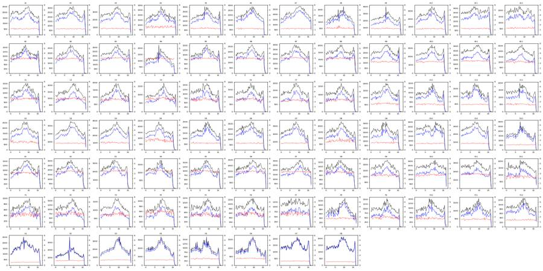
102
tool call · Bash
cd /task; python3 -c "
import flowkit as fk, inspect
print(inspect.signature(fk.GatingStrategy.gate_sample))
print([m for m in dir(fk.GatingStrategy) if not m.startswith('_')])
import flowkit._models.gating_results as gr
print([m for m in dir(gr.GatingResults) if not m.startswith('_')])
print(inspect.signature(fk.export_gatingml))
"103
tool output
(self, sample, cache_events=False, verbose=False) ['add_comp_matrix', 'add_gate', 'add_transform', 'clear_cache', 'export_gate_hierarchy_image', 'find_matching_gate_paths', 'gate_sample', 'get_child_gate_ids', 'get_comp_matrix', 'get_gate', 'get_gate_hierarchy', 'get_gate_ids', 'get_max_depth', 'get_parent_gate_id', 'get_root_gates', 'get_transform', 'is_custom_gate', 'remove_gate', 'rename_gate', 'resolver'] ['get_gate_absolute_percent', 'get_gate_count', 'get_gate_membership', 'get_gate_relative_percent'] (gating_strategy, file_handle, sample_id=None)
104
tool call · Bash
cd /task; cat > scripts/build_gates.py <<'EOF'
"""Build the single GatingStrategy used for all 80 wells, export GatingML, re-load it,
and gate every file with the RE-LOADED strategy to produce counts.csv."""
import flowkit as fk, numpy as np, pandas as pd, sys
OUT='/task/outputs'
# --- spillover estimated from the single-stain controls (G7 caspase-only, G8 SYTOX-only),
# singlet events, median-difference method (see scripts/comp.py output):
# CellEvent green (BL1) -> BL2 = 0.89 ; SYTOX AADvanced (BL2) -> BL1 = 0.0003
SPILL_12=0.89; SPILL_21=0.0003
CASP_T=1000.0 # compensated BL1-A threshold (> 99.9th pct of caspase-FMO well G8 = 814)
DEAD_T=30000.0 # compensated BL2-A threshold (valley between SYTOX-dim and SYTOX-bright modes)
def build():
g=fk.GatingStrategy()
spill=np.array([[1.0,SPILL_12],[SPILL_21,1.0]])
mat=fk.Matrix(spill,['BL1-A','BL2-A'],fluorochromes=['CellEvent_Casp37_Green','SYTOX_AADvanced'])
g.add_comp_matrix('spill_G7G8',mat)
U='uncompensated'
# 1 cells: exclude debris (FSC-A<75k), low-SSC noise streak (SSC-A<25k) and off-scale events
cells=fk.gates.PolygonGate('cells',[fk.Dimension('FSC-A',compensation_ref=U),fk.Dimension('SSC-A',compensation_ref=U)],
[(75000,25000),(1040000,25000),(1040000,1040000),(75000,1040000)])
g.add_gate(cells,('root',))
# 2 singlets: FSC-A vs FSC-H diagonal, excludes doublets below the line
sing=fk.gates.PolygonGate('singlets',[fk.Dimension('FSC-A',compensation_ref=U),fk.Dimension('FSC-H',compensation_ref=U)],
[(75000,30000),(300000,135000),(500000,215000),(700000,280000),(1040000,380000),(1040000,700000),(75000,700000)])
g.add_gate(sing,('root','cells'))
C='spill_G7G8'
# 3 live: SYTOX AADvanced (BL2) not bright
live=fk.gates.RectangleGate('live',[fk.Dimension('BL2-A',compensation_ref=C,range_max=DEAD_T)])
g.add_gate(live,('root','cells','singlets'))
# 4 caspase_pos (assay read-out): CellEvent Caspase-3/7 (BL1) positive among live singlets
cp=fk.gates.RectangleGate('caspase_pos',[fk.Dimension('BL1-A',compensation_ref=C,range_min=CASP_T)])
g.add_gate(cp,('root','cells','singlets','live'))
# other: dead (SYTOX-bright) singlets, and caspase+ among dead, caspase+ among all singlets
dead=fk.gates.RectangleGate('dead',[fk.Dimension('BL2-A',compensation_ref=C,range_min=DEAD_T)])
g.add_gate(dead,('root','cells','singlets'))
dcp=fk.gates.RectangleGate('dead_caspase_pos',[fk.Dimension('BL1-A',compensation_ref=C,range_min=CASP_T)])
g.add_gate(dcp,('root','cells','singlets','dead'))
acp=fk.gates.RectangleGate('caspase_pos_all',[fk.Dimension('BL1-A',compensation_ref=C,range_min=CASP_T)])
g.add_gate(acp,('root','cells','singlets'))
return g
POPS=[('cells','cells','all_events'),('singlets','singlets','cells'),('live','live','singlets'),
('caspase_pos','marker_positive','live'),('dead','other','singlets'),('dead_caspase_pos','other','dead'),
('caspase_pos_all','other','singlets')]
if __name__=='__main__':
g=build()
with open(f'{OUT}/gates.xml','wb') as fh: fk.export_gatingml(g,fh)
g2=fk.parse_gating_xml(f'{OUT}/gates.xml')
print('reloaded gate ids:',g2.get_gate_ids())
lay=pd.read_csv('/task/inputs/plate_layout.csv')
rows=[]
for f,w in zip(lay.file,lay.well):
s=fk.Sample(f'/task/inputs/raw/{f}')
res=g2.gate_sample(s)
n_all=s.event_count
cnt={'all_events':n_all}
for p,role,par in POPS:
gp=g2.find_matching_gate_paths(p)[0]
cnt[p]=int(res.get_gate_count(p,gp))
rows.append(dict(file=f,well=w,population='all_events',role='other',parent='none',count=n_all,pct_of_parent=''))
for p,role,par in POPS:
pc=cnt[par]
rows.append(dict(file=f,well=w,population=p,role=role,parent=par,count=cnt[p],pct_of_parent=round(100*cnt[p]/pc,4) if pc>0 else ''))
C=pd.DataFrame(rows,columns=['file','well','population','role','parent','count','pct_of_parent'])
C.to_csv(f'{OUT}/counts.csv',index=False)
print(C.head(16)); print(len(C))
EOF
python3 scripts/build_gates.py105
tool output
reloaded gate ids: [('cells', ('root',)), ('singlets', ('root', 'cells')), ('live', ('root', 'cells', 'singlets')), ('caspase_pos', ('root', 'cells', 'singlets', 'live')), ('dead', ('root', 'cells', 'singlets')), ('dead_caspase_pos', ('root', 'cells', 'singlets', 'dead')), ('caspase_pos_all', ('root', 'cells', 'singlets'))]
file well ... count pct_of_parent
0 Caspase-assay-2-mlk_caspase_Group_A1.fcs A1 ... 31328
1 Caspase-assay-2-mlk_caspase_Group_A1.fcs A1 ... 20976 66.9561
2 Caspase-assay-2-mlk_caspase_Group_A1.fcs A1 ... 18317 87.3236
3 Caspase-assay-2-mlk_caspase_Group_A1.fcs A1 ... 16313 89.0593
4 Caspase-assay-2-mlk_caspase_Group_A1.fcs A1 ... 1976 12.113
5 Caspase-assay-2-mlk_caspase_Group_A1.fcs A1 ... 2004 10.9407
6 Caspase-assay-2-mlk_caspase_Group_A1.fcs A1 ... 1535 76.5968
7 Caspase-assay-2-mlk_caspase_Group_A1.fcs A1 ... 3511 19.168
8 Caspase-assay-2-mlk_caspase_Group_A2.fcs A2 ... 40169
9 Caspase-assay-2-mlk_caspase_Group_A2.fcs A2 ... 28958 72.0904
10 Caspase-assay-2-mlk_caspase_Group_A2.fcs A2 ... 24862 85.8554
11 Caspase-assay-2-mlk_caspase_Group_A2.fcs A2 ... 22885 92.0481
12 Caspase-assay-2-mlk_caspase_Group_A2.fcs A2 ... 3812 16.6572
13 Caspase-assay-2-mlk_caspase_Group_A2.fcs A2 ... 1977 7.9519
14 Caspase-assay-2-mlk_caspase_Group_A2.fcs A2 ... 1473 74.5068
15 Caspase-assay-2-mlk_caspase_Group_A2.fcs A2 ... 5285 21.2573
[16 rows x 7 columns]
640107
tool call · Bash
cd /task; head -c 3000 outputs/gates.xml; echo; grep -c "compensation-ref" outputs/gates.xml; python3 -c "
import pandas as pd
C=pd.read_csv('outputs/counts.csv'); print(C.groupby('population').size()); print(C[C.well=='G8'])"108
tool output
<?xml version='1.0' encoding='UTF-8'?>
<gating:Gating-ML xmlns:gating="http://www.isac-net.org/std/Gating-ML/v2.0/gating" xmlns:data-type="http://www.isac-net.org/std/Gating-ML/v2.0/datatypes" xmlns:transforms="http://www.isac-net.org/std/Gating-ML/v2.0/transformations">
<transforms:spectrumMatrix transforms:id="spill_G7G8">
<transforms:fluorochromes>
<data-type:fcs-dimension data-type:name="CellEvent_Casp37_Green"/>
<data-type:fcs-dimension data-type:name="SYTOX_AADvanced"/>
</transforms:fluorochromes>
<transforms:detectors>
<data-type:fcs-dimension data-type:name="BL1-A"/>
<data-type:fcs-dimension data-type:name="BL2-A"/>
</transforms:detectors>
<transforms:spectrum>
<transforms:coefficient transforms:value="1.0"/>
<transforms:coefficient transforms:value="0.89"/>
</transforms:spectrum>
<transforms:spectrum>
<transforms:coefficient transforms:value="0.0003"/>
<transforms:coefficient transforms:value="1.0"/>
</transforms:spectrum>
</transforms:spectrumMatrix>
<gating:PolygonGate gating:id="cells">
<gating:dimension gating:compensation-ref="uncompensated">
<data-type:fcs-dimension data-type:name="FSC-A"/>
</gating:dimension>
<gating:dimension gating:compensation-ref="uncompensated">
<data-type:fcs-dimension data-type:name="SSC-A"/>
</gating:dimension>
<gating:vertex>
<gating:coordinate data-type:value="75000"/>
<gating:coordinate data-type:value="25000"/>
</gating:vertex>
<gating:vertex>
<gating:coordinate data-type:value="1040000"/>
<gating:coordinate data-type:value="25000"/>
</gating:vertex>
<gating:vertex>
<gating:coordinate data-type:value="1040000"/>
<gating:coordinate data-type:value="1040000"/>
</gating:vertex>
<gating:vertex>
<gating:coordinate data-type:value="75000"/>
<gating:coordinate data-type:value="1040000"/>
</gating:vertex>
</gating:PolygonGate>
<gating:PolygonGate gating:id="singlets" gating:parent_id="cells">
<gating:dimension gating:compensation-ref="uncompensated">
<data-type:fcs-dimension data-type:name="FSC-A"/>
</gating:dimension>
<gating:dimension gating:compensation-ref="uncompensated">
<data-type:fcs-dimension data-type:name="FSC-H"/>
</gating:dimension>
<gating:vertex>
<gating:coordinate data-type:value="75000"/>
<gating:coordinate data-type:value="30000"/>
</gating:vertex>
<gating:vertex>
<gating:coordinate data-type:value="300000"/>
<gating:coordinate data-type:value="135000"/>
</gating:vertex>
<gating:vertex>
<gating:coordinate data-type:value="500000"/>
<gating:coordinate data-type:value="215000"/>
</gating:vertex>
<gating:vertex>
<gating:coordinate data-type:value="700000"/>
<gating:coordinate data-type:value="280000"/>
</gating:vertex>
<gating:vertex>
<gating:coordinate data-type:value="1040000"/>
9
population
all_events 80
caspase_pos 80
caspase_pos_all 80
cells 80
dead 80
dead_caspase_pos 80
live 80
singlets 80
dtype: int64
file well ... count pct_of_parent
632 Caspase-assay-2-mlk_caspase_Group_G8.fcs G8 ... 24323 NaN
633 Caspase-assay-2-mlk_caspase_Group_G8.fcs G8 ... 23068 94.8403
634 Caspase-assay-2-mlk_caspase_Group_G8.fcs G8 ... 20702 89.7434
635 Caspase-assay-2-mlk_caspase_Group_G8.fcs G8 ... 20290 98.0099
636 Caspase-assay-2-mlk_caspase_Group_G8.fcs G8 ... 9 0.0444
637 Caspase-assay-2-mlk_caspase_Group_G8.fcs G8 ... 412 1.9901
638 Caspase-assay-2-mlk_caspase_Group_G8.fcs G8 ... 1 0.2427
639 Caspase-assay-2-mlk_caspase_Group_G8.fcs G8 ... 10 0.0483
[8 rows x 7 columns]110
tool call · Bash
cd /task; cat > scripts/sensitivity.py <<'EOF'
import pandas as pd, numpy as np
D=pd.read_pickle('work/singlets.pkl')
lay=pd.read_csv('inputs/plate_layout.csv').set_index('well')
D['cBL1']=D['BL1-A']-0.0003*D['BL2-A']; D['cBL2']=D['BL2-A']-0.89*D['BL1-A']
rows=[]
for w,g in D.groupby('well'):
live=g[g.cBL2<30000]
r=dict(well=w)
for T in [700,1000,1500,2000]: r[f'T{T}']=100*(live.cBL1>T).mean()
for DT in [15000,50000]:
l2=g[g.cBL2<DT]; r[f'D{DT}']=100*(l2.cBL1>1000).mean()
r['medBL1_live']=np.median(live.cBL1)
rows.append(r)
R=pd.DataFrame(rows).set_index('well').join(lay[['cell_line','camptothecin','conditioned_media']])
R=R[~R.index.str.startswith('G')]
R=R.drop(['F8'])
R['cm']=R.conditioned_media.map({'WT 24hr conditioned media':'CM24','WT 48hr conditioned media':'CM48','no conditioned media':'noCM'})
print(R.groupby(['cell_line','cm']).mean(numeric_only=True).round(1).to_string())
EOF
python3 scripts/sensitivity.py111
tool output
T700 T1000 T1500 T2000 D15000 D50000 medBL1_live
cell_line cm
E1 CM24 70.4 60.7 45.6 33.6 57.5 62.6 1435.0
CM48 70.5 61.1 46.9 34.9 57.6 63.2 1426.3
noCM 55.4 44.2 29.4 18.8 42.0 45.7 875.2
E3 CM24 44.9 35.7 24.5 16.4 25.6 38.7 592.1
CM48 39.3 30.4 20.9 14.2 19.9 33.5 509.3
noCM 15.8 10.2 5.5 3.1 7.2 11.7 275.4
WT CM24 25.9 20.8 14.5 9.9 18.8 22.1 213.2
CM48 23.5 18.9 13.2 9.0 16.6 20.5 209.3
noCM 18.2 13.6 8.8 5.8 12.0 15.3 197.1113
tool call · Bash
cd /task; cat > scripts/classify.py <<'EOF'
import pandas as pd, numpy as np
F=pd.read_csv('work/features.csv').set_index('well')
F['lssc']=np.log10(F.ssc)
feats=['lssc','sscsat','lr','corr']
tr=F[~F.index.str.startswith('G')].copy()
tr['grp']=np.where(tr.cell_line=='E3','E3','WT/E1')
mu=tr[feats].mean(); sd=tr[feats].std()
Z=(F[feats]-mu)/sd
cent=Z.loc[tr.index].groupby(tr.grp).mean()
# leave-one-out on training wells
wrong=[]
for w in tr.index:
others=tr.index.drop(w)
c=Z.loc[others].groupby(tr.loc[others,'grp']).mean()
d=((c-Z.loc[w])**2).sum(axis=1)
if d.idxmin()!=tr.loc[w,'grp']: wrong.append((w,d.round(2).to_dict()))
print('LOO misclassified among A-F:',wrong)
for w in [x for x in F.index if x.startswith('G')]:
d=((cent-Z.loc[w])**2).sum(axis=1)**.5
print(w,F.loc[w,'cell_line'],'-> nearest',d.idxmin(),d.round(2).to_dict(), F.loc[w,feats].round(3).to_dict())
print(F[~F.index.str.startswith('G')].groupby('cell_line')[feats+['ssc']].agg(['min','max']).round(3).T)
EOF
python3 scripts/classify.py114
tool output (error)
Exit code 1
LOO misclassified among A-F: []
Traceback (most recent call last):
File "/task/scripts/classify.py", line 20, in <module>
print(w,F.loc[w,'cell_line'],'-> nearest',d.idxmin(),d.round(2).to_dict(), F.loc[w,feats].round(3).to_dict())
^^^^^^^^^^^^^^^^^^^^^^^
File "/usr/local/lib/python3.12/site-packages/pandas/core/series.py", line 2821, in round
raise TypeError("Expected numeric dtype, got object instead.")
TypeError: Expected numeric dtype, got object instead.115
agent
Gates and counts are saved; now verifying the suspected G3/G4 ↔ G5/G6 label swap with a scatter-profile classifier.
116
tool call · Bash
cd /task; sed -i 's/F.loc\[w,feats\].round(3).to_dict()/F.loc[w,feats].astype(float).round(3).to_dict()/' scripts/classify.py; python3 scripts/classify.py
117
tool output
LOO misclassified among A-F: []
G1 WT -> nearest WT/E1 {'E3': 3.89, 'WT/E1': 1.0} {'lssc': 5.302, 'sscsat': 1.057, 'lr': -0.691, 'corr': 0.44}
G2 WT -> nearest WT/E1 {'E3': 2.64, 'WT/E1': 1.61} {'lssc': 5.306, 'sscsat': 1.395, 'lr': -0.451, 'corr': 0.622}
G3 E3 -> nearest WT/E1 {'E3': 3.22, 'WT/E1': 0.81} {'lssc': 5.306, 'sscsat': 0.538, 'lr': -0.514, 'corr': 0.51}
G4 E3 -> nearest WT/E1 {'E3': 3.22, 'WT/E1': 0.94} {'lssc': 5.304, 'sscsat': 0.541, 'lr': -0.524, 'corr': 0.536}
G5 E1 -> nearest E3 {'E3': 1.19, 'WT/E1': 4.08} {'lssc': 5.496, 'sscsat': 6.084, 'lr': -0.382, 'corr': 0.72}
G6 E1 -> nearest E3 {'E3': 1.39, 'WT/E1': 4.31} {'lssc': 5.505, 'sscsat': 6.623, 'lr': -0.378, 'corr': 0.716}
G7 WT -> nearest WT/E1 {'E3': 3.65, 'WT/E1': 2.25} {'lssc': 5.29, 'sscsat': 1.087, 'lr': -0.679, 'corr': 0.735}
G8 WT -> nearest WT/E1 {'E3': 3.09, 'WT/E1': 1.87} {'lssc': 5.305, 'sscsat': 1.094, 'lr': -0.563, 'corr': 0.694}
cell_line E1 E3 WT
lssc min 5.214 5.421 5.257
max 5.324 5.625 5.333
sscsat min 0.089 3.252 0.606
max 1.114 8.879 1.567
lr min -0.719 -0.405 -0.676
max -0.422 -0.073 -0.379
corr min 0.201 0.474 0.305
max 0.401 0.743 0.563
ssc min 163529.000 263384.500 180865.500
max 210823.000 422166.000 215436.500119
tool call · Bash
cd /task; python3 -c "
import pandas as pd, numpy as np
A=pd.read_pickle('work/all_raw.pkl')
A['sat']=(A['FSC-A']>=1048575)|(A['SSC-A']>=1048575)|(A['FSC-H']>=1048575)|(A['SSC-H']>=1048575)
A['flsat']=(A['BL1-A']>=1048575)|(A['BL2-A']>=1048575)
A['cBL1']=A['BL1-A']-0.0003*A['BL2-A']; A['cBL2']=A['BL2-A']-0.89*A['BL1-A']
r=A.groupby('well').apply(lambda g: pd.Series(dict(sat=100*g.sat.mean(), flsat=100*g.flsat.mean(), casp_sat=100*((g.cBL1>1000)&(g.cBL2<30000))[g.sat].mean(), casp_unsat=100*((g.cBL1>1000)&(g.cBL2<30000))[~g.sat&(g['FSC-A']>75000)].mean())))
r=r.loc[sorted(r.index,key=lambda w:(w[0],int(w[1:])))]
print(r.round(2).T.to_string())
r.to_csv('work/sat.csv')
"120
tool output
<string>:7: FutureWarning: DataFrameGroupBy.apply operated on the grouping columns. This behavior is deprecated, and in a future version of pandas the grouping columns will be excluded from the operation. Either pass `include_groups=False` to exclude the groupings or explicitly select the grouping columns after groupby to silence this warning. well A1 A2 A3 A4 A5 A6 A7 A8 A9 A10 A11 A12 B1 B2 B3 B4 B5 B6 B7 B8 B9 B10 B11 B12 C1 C2 C3 C4 C5 C6 C7 C8 C9 C10 C11 C12 D1 D2 D3 D4 D5 D6 D7 D8 D9 D10 D11 D12 E1 E2 E3 E4 E5 E6 E7 E8 E9 E10 E11 E12 F1 F2 F3 F4 F5 F6 F7 F8 F9 F10 F11 F12 G1 G2 G3 G4 G5 G6 G7 G8 sat 1.18 0.95 0.76 1.43 1.10 1.47 1.13 1.98 1.22 1.20 1.17 1.29 0.56 0.42 0.31 1.23 0.26 0.41 0.38 0.59 0.65 0.68 0.48 0.77 5.14 4.16 5.34 4.62 4.63 4.33 4.09 4.17 5.43 6.34 7.54 4.37 1.11 1.01 0.78 2.08 1.37 1.37 0.84 1.55 1.69 1.13 0.90 1.84 0.61 0.44 0.40 1.19 0.83 0.40 0.36 1.50 1.17 0.73 0.50 1.06 4.65 3.62 3.69 4.89 3.89 3.67 3.92 9.45 6.35 7.36 7.15 5.05 1.99 2.42 1.25 1.20 7.54 9.18 1.49 1.66 flsat 0.01 0.00 0.00 0.02 0.00 0.01 0.00 0.05 0.01 0.00 0.00 0.02 0.04 0.00 0.00 0.32 0.00 0.00 0.00 0.01 0.00 0.00 0.00 0.00 0.01 0.00 0.00 0.02 0.02 0.00 0.00 0.02 0.00 0.00 0.00 0.00 0.00 0.00 0.00 0.05 0.01 0.00 0.00 0.03 0.00 0.01 0.00 0.00 0.01 0.00 0.00 0.14 0.04 0.00 0.00 0.12 0.00 0.00 0.00 0.04 0.00 0.02 0.01 0.00 0.03 0.00 0.01 0.02 0.01 0.02 0.01 0.01 0.00 0.00 0.00 0.00 0.00 0.00 0.00 0.00 casp_sat 17.34 33.68 42.22 22.15 30.39 30.22 35.44 17.92 26.84 28.21 29.27 22.22 13.33 39.26 42.74 4.49 31.91 39.53 36.57 22.58 31.39 40.22 48.48 40.82 31.61 32.36 35.67 22.61 25.72 31.70 36.36 30.03 39.73 42.36 32.60 40.44 25.00 21.11 35.43 9.96 22.88 19.73 27.81 17.36 25.62 28.51 27.62 12.36 21.55 22.64 33.12 8.07 12.18 24.62 27.01 2.98 23.77 28.05 37.67 13.07 19.26 25.23 25.76 15.03 20.51 22.68 23.98 23.77 22.24 25.73 23.32 22.12 24.14 17.95 15.66 16.10 36.82 27.76 77.37 22.03 casp_unsat 11.54 16.56 16.44 18.24 15.90 16.24 15.87 15.22 11.71 12.62 13.37 11.51 34.56 48.45 51.91 36.15 40.81 47.88 48.98 48.29 34.10 36.18 40.95 33.48 32.54 35.96 31.97 34.11 30.07 34.04 31.77 28.78 10.85 9.24 9.60 14.25 25.30 21.43 24.31 24.42 18.99 20.27 18.74 21.32 17.62 15.16 15.52 6.39 48.11 57.29 56.86 45.37 42.07 52.51 57.10 45.07 39.73 44.34 50.83 32.97 25.39 32.36 27.22 28.01 25.57 28.60 26.36 3.41 15.00 12.47 8.45 8.95 0.07 2.52 4.07 4.38 3.36 2.50 4.64 0.05
122
tool call · Skill
{
"skill": "dataviz"
}123
tool output
Launching skill: dataviz
124
tool call · Bash
cd /tmp/claude-0/bundled-skills/2.1.322/35e80cca5adde4e40f321fe4ea1b9a97/dataviz; sed -n 1,200p references/palette.md | head -120; sed -n 1,80p references/anti-patterns.md
125
tool output
# Reference palette
This is the **reference instance** of the data-viz method: every parameter the
method needs, filled in with a validated default palette. The rest of the skill
is system-agnostic - **to target your brand, substitute this file's values** and
re-run the validator. Nothing else changes.
## How to use these values
Everything below is plain hex. In an HTML chart, **define the slots you use as
CSS custom properties in a local `<style>` block** at the top of the file, then
reference them by role throughout - so the light/dark values swap in one place,
and the chart body is written against roles rather than raw hex:
```css
.viz-root {
color-scheme: light;
--surface-1: #fcfcfb; /* chart surface */
--text-primary: #0b0b0b;
--text-secondary: #52514e;
--series-1: #2a78d6; /* categorical slot 1 */
/* ...only the roles this chart uses */
}
@media (prefers-color-scheme: dark) {
:root:where(:not([data-theme="light"])) .viz-root {
color-scheme: dark;
--surface-1: #1a1a19;
--text-primary: #f0efec;
--text-secondary: #c3c2b7;
--series-1: #3987e5;
}
}
:root[data-theme="dark"] .viz-root {
color-scheme: dark;
--surface-1: #1a1a19;
--text-primary: #f0efec;
--text-secondary: #c3c2b7;
--series-1: #3987e5;
}
```
Declare the dark values under both scopes as above - the media query covers
the OS setting; the `data-theme` scope covers the viewer's theme toggle,
which must win both ways (the `:not(...)` guard lets a light stamp beat
OS-dark; `:where()` keeps the media block below the toggle scope).
## Categorical palette
Both modes are selected. The dark column is the same eight hues stepped for the
dark surface, not a separate palette:
| Slot | Hue | Light | Dark |
|------|-----|-------|------|
| 1 | blue | `#2a78d6` | `#3987e5` |
| 2 | orange | `#eb6834` | `#d95926` |
| 3 | aqua | `#1baf7a` | `#199e70` |
| 4 | yellow | `#eda100` | `#c98500` |
| 5 | magenta | `#e87ba4` | `#d55181` |
| 6 | green | `#008300` | `#008300` |
| 7 | violet | `#6250d6` | `#9085e9` |
| 8 | red | `#e34948` | `#e66767` |
This order passes every hard gate in both modes on the default *adjacent*
pairlist (stacks, bars, lines): worst adjacent CVD Delta E 9.1 light / 8.4 dark
(OKLab ×100, >=8 target), worst adjacent normal-vision Delta E 19.6 light / 19.3
dark (>=15 floor). Under `--pairs all` (scatter, bubble, choropleth, small
multiples) the full eight cannot clear the floors - with all 28 pairs in
play no ordering can (the pairlist no longer depends on order), and
re-stepping is off the table by the documented-palette rule - so those
chart forms carry a series cap: **the first three slots validate all-pairs
in both modes** (worst pair CVD Delta E 9.2 light / 9.4 dark, normal-vision 24.0
light / 20.9 dark - clear of the CVD warn band). Past three, fold to "Other" or
facet: the fourth slot puts yellow and orange on screen
together, and that pair fails the all-pairs floors (normal-vision 13.7
light; CVD 4.8 dark). Three light-mode slots (magenta, yellow, aqua)
sit below 3:1 contrast on the light surface: the **relief rule** applies (ship
visible direct labels or the table view). The dark steps were chosen for the
dark band (OKLCH L ~ 0.48-0.67, >= 3:1 on the dark surface) and validated as a
set. (Ordering history: adopted July 2026 for its more harmonious opening -
the same eight hues and steps as its predecessor, re-ordered, zero hex
changes. The predecessor validated its first FOUR slots all-pairs, with its
dark run in the 6-8 CVD warn band, so secondary encoding was required there;
this order deliberately trades that fourth slot - yellow now sits beside orange -
for better-looking leading colors. Revisit the trade if yellow<->orange
confusion shows up in real charts with four or more series; undoing it is a
pure re-order. Light slot 7 has since been lightened, `#4a3aa7` -> `#6250d6`
(August 2026); the adjacent-pair figures above are unchanged by that move, the
non-adjacent blue<->violet pair now sits below both floors under `--pairs all`
(normal-vision 10.5, CVD 4.5 - inside the range the series cap already
excludes), and the order enumeration was run with the earlier value.) When you
swap in your own ramps, hold your palette to the full gate.
The slot **ordering** is the CVD-safety mechanism, not cosmetic - candidate
orderings were enumerated and only those clearing every adjacent gate in both
modes kept (see `color-formula.md` § Themes); this default is one of the
passing orders, picked among them for its opening colors. When you swap in
your brand's hues, do the same: run the validator on candidate orderings and
choose only among the passing ones.
## Sequential hue
Default single hue: **blue**, light->dark. When two sequential contexts appear at
once, the second takes the next categorical slot's hue (orange), each as its own
one-hue ramp.
| step | hex | step | hex | step | hex | step | hex |
|---|---|---|---|---|---|---|---|
| 100 | `#cde2fb` | 250 | `#86b6ef` | 400 | `#3987e5` | 550 | `#1c5cab` |
| 150 | `#b7d3f6` | 300 | `#6da7ec` | 450 | `#2a78d6` | 600 | `#184f95` |
| 200 | `#9ec5f4` | 350 | `#5598e7` | 500 | `#256abf` | 650 | `#104281` |
| | | | | | | 700 | `#0d366b` |
The full 100->700 range is for **sequential** encoding (continuous magnitude -
heatmaps, choropleths) where the lightest step means "near zero" and is allowed
to recede toward the surface. For an **ordinal** ramp (discrete ordered marks -
funnel stages, tiers - validated with `--ordinal`), the step nearest the surface
must still clear 2:1: on light, start no lighter than **step 250** (`#86b6ef`,
2.06:1); on dark, go no darker than **step 600** (`#184f95`, 2.15:1).
## Diverging pair
# Anti-patterns - what goes wrong
Check every chart against this list. If your output matches an entry, it is wrong -
fix it before shipping. These are real failure modes, each caught in shipping
dashboards.
## Color & encoding
**Bad: Dual-axis charts (two y-scales on one
… [3,863 more characters not shown]127
tool call · Bash
cd /tmp/claude-0/bundled-skills/2.1.322/35e80cca5adde4e40f321fe4ea1b9a97/dataviz; node scripts/validate_palette.js "#8a8984,#2a78d6,#eb6834" --mode light --pairs all 2>&1 | tail -25
128
tool output
/bin/bash: line 1: node: command not found Shell cwd was reset to /task
130
tool call · Bash
cd /task; cat > scripts/analyse.py <<'EOF'
"""Per-well metrics from outputs/counts.csv -> flags.csv, condition_summary.csv, stats."""
import pandas as pd, numpy as np, json
from scipy import stats
OUT='/task/outputs'
C=pd.read_csv(f'{OUT}/counts.csv')
lay=pd.read_csv('/task/inputs/plate_layout.csv').set_index('well')
P=C.pivot(index='well',columns='population',values='count')
W=pd.DataFrame(index=P.index)
W['casp_live']=100*P.caspase_pos/P.live # primary metric
W['casp_all']=100*P.caspase_pos_all/P.singlets # secondary: caspase+ of all singlets
W['dead']=100*P.dead/P.singlets
W['singlets']=P.singlets; W['live']=P.live; W['all']=P.all_events
W=W.join(lay[['sample','cell_line','camptothecin','conditioned_media']])
cmmap={'WT 24hr conditioned media':'CM24','WT 48hr conditioned media':'CM48','no conditioned media':'noCM'}
W['cm']=W.conditioned_media.map(cmmap)
dmap={'10uM':'10uM','5uM':'5uM','2uM':'2uM','DMSO':'DMSO'}
W['dose']=W.camptothecin.map(dmap)
W['row']=W.index.str[0]; W['col']=W.index.str[1:].astype(int)
order=sorted(W.index,key=lambda w:(w[0],int(w[1:])))
W=W.loc[order]
feat=pd.read_csv('/task/work/features.csv').set_index('well')
sat=pd.read_csv('/task/work/sat.csv').set_index('well')
W.to_csv('/task/work/per_well_metrics.csv')
# ---------------- flags ----------------
flags={}
e3cm=W[(W.cell_line=='E3')&(W.cm!='noCM')&(~W.index.str.startswith('G'))&(W.index!='F8')].casp_live
for w in ['G3','G4']:
flags[w]=('mislabel',f"Labelled E3 but scatter matches WT/E1, not E3: median SSC-A {feat.loc[w,'ssc']/1e3:.0f}k (E3 wells 263-422k; WT/E1 164-215k), SSC-A off-scale {feat.loc[w,'sscsat']:.2f}% (E3 3.3-8.9%; WT/E1 0.09-1.6%), FSC/SSC r={feat.loc[w,'corr']:.2f}; nearest-centroid on 4 scatter features assigns WT/E1. Mirror image of G5/G6 -> likely E3<->E1 swap of the no-treatment pairs during transfer to the flow plate (11-30 map: E3 in G3-G4, E1 in H1-H2). Caspase+ of live {W.loc[w,'casp_live']:.1f}%. Identity cannot be confirmed (WT vs E1 not separable by scatter), so not used in any condition.",'exclude')
for w in ['G5','G6']:
flags[w]=('mislabel',f"Labelled E1 but scatter matches E3: median SSC-A {feat.loc[w,'ssc']/1e3:.0f}k, SSC-A off-scale {feat.loc[w,'sscsat']:.1f}%, FSC/SSC r={feat.loc[w,'corr']:.2f} (E3 no-CM wells C9-C12: 282-335k, 3.5-5.4%, r=0.72-0.74; E1 wells 164-211k, <=1.1%, r<=0.40); nearest-centroid assigns E3. Also {sat.loc[w,'sat']:.1f}% of events off-scale on scatter. Caspase+ of live {W.loc[w,'casp_live']:.1f}%. Not used in any condition.",'exclude')
flags['F8']=('other',f"Outlier within its condition: caspase+ of live {W.loc['F8','casp_live']:.1f}% vs {e3cm.min():.1f}-{e3cm.max():.1f}% (mean {e3cm.mean():.1f}%) in the other 15 E3 + CM wells, incl. its duplicate C8 ({W.loc['C8','casp_live']:.1f}%); main population caspase-negative like no-CM E3 wells. Scatter also abnormal: median SSC-A {feat.loc['F8','ssc']/1e3:.0f}k (plate maximum), {sat.loc['F8','sat']:.1f}% of events off-scale on scatter. Suspected handling/treatment error (e.g. CM not received).",'exclude')
flags['D12']=('other',f"Lowest caspase+ of any WT A-F well: {W.loc['D12','casp_live']:.1f}% vs {W.loc[['D9','D10','D11'],'casp_live'].min():.1f}-{W.loc[['D9','D10','D11'],'casp_live'].max():.1f}% in row-mates D9-D11 and {W.loc['A12','casp_live']:.1f}% in duplicate A12; also less debris ({feat.loc['D12','debris']:.0f}% of events vs 28-38% in row D). Biologically plausible, gates fine; kept, noted.",'keep_with_note')
for w in W.index:
if w in flags: continue
if sat.loc[w,'sat']>5:
flags[w]=('saturation',f"{sat.loc[w,'sat']:.1f}% of events off-scale (=1048575) on FSC/SSC (SSC voltage 290; plate median {sat['sat'].median():.1f}%); excluded by the cells gate, so large/granular E3 events are under-sampled. Caspase+ of live {W.loc[w,'casp_live']:.1f}% is in line with its condition.",'keep_with_note')
ctrl_note={'G1':f"Unstained WT control: caspase+ {W.loc['G1','casp_live']:.2f}%, SYTOX-bright {W.loc['G1','dead']:.2f}%; used to confirm autofluorescence below both thresholds.",
'G7':f"Caspase-only WT control (SYTOX FMO): {W.loc['G7','casp_live']:.1f}% caspase+, {W.loc['G7','dead']:.2f}% SYTOX-bright; used to estimate BL1->BL2 spillover (0.89).",
'G8':f"SYTOX-only WT control (caspase FMO): {W.loc['G8','casp_live']:.2f}% caspase+, {W.loc['G8','dead']:.1f}% SYTOX-bright; BL1 99.9th pct 814 sets caspase threshold (1000)."}
rows=[]
for w in W.index:
f=lay.loc[w,'file']
if w in flags: it,ev,dec=flags[w]
else: it,ev,dec='none',ctrl_note.get(w,''),'keep'
rows.append(dict(file=f,well=w,issue_type=it,evidence=ev,decision=dec))
FL=pd.DataFrame(rows,columns=['file','well','issue_type','evidence','decision'])
FL.to_csv(f'{OUT}/flags.csv',index=False)
excluded=FL[FL.decision=='exclude'].well.tolist()
print('excluded',excluded); print(FL.issue_type.value_counts())
# ---------------- condition summary ----------------
MDEF="Per-well % caspase-3/7-positive of live singlets = 100 x count(caspase_pos: compensated BL1-A [CellEvent Caspase-3/7 Green] >= 1000) / count(live: singlets with compensated BL2-A [SYTOX AADvanced] < 30000); unit = % of live singlet cells; mean and SD (ddof=1) across wells"
NORM='none'
use=W[~W.index.isin(excluded)]
main=use[use.row.isin(list('ABCDEF'))]
cond=[]
def add(name,ws,note=None):
v=W.loc[ws,'casp_live']
cond.append(dict(condition=name,wells=';'.join(ws),n_wells_used=len(ws),mean=round(v.mean(),3),sd=round(v.std(ddof=1),3) if len(ws)>1 else '',metric_definition=MDEF,normalisation_applied=NORM))
lines=['WT','E1','E3']; cms=['noCM','CM24','CM48']
for l in lines:
for c in cms:
ws=main[(main.cell_line==l)&(main.cm==c)].index.tolist()
add(f'{l}_{c}_all_doses',ws)
for l in lines:
for c in cms:
for d in ['DMSO','2uM','5uM','10uM']:
ws=main[(main.cell_line==l)&(main.cm==c)&(main.dose==d)].index.tolist()
add(f'{l}_{c}_{d}',ws)
add('WT_untreated_stained_G2',['G2'])
add('ctrl_un
… [3,453 more characters not shown]131
tool output
excluded ['F8', 'G3', 'G4', 'G5', 'G6']
issue_type
none 65
saturation 9
mislabel 4
other 2
Name: count, dtype: int64
condition wells n_wells_used mean sd
0 WT_noCM_all_doses A9;A10;A11;A12;D9;D10;D11;D12 8 13.590 3.87
1 WT_CM24_all_doses A1;A2;A3;A4;D1;D2;D3;D4 8 20.836 5.684
2 WT_CM48_all_doses A5;A6;A7;A8;D5;D6;D7;D8 8 18.940 3.075
3 E1_noCM_all_doses B9;B10;B11;B12;E9;E10;E11;E12 8 44.240 7.174
4 E1_CM24_all_doses B1;B2;B3;B4;E1;E2;E3;E4 8 60.684 8.843
5 E1_CM48_all_doses B5;B6;B7;B8;E5;E6;E7;E8 8 61.101 5.484
6 E3_noCM_all_doses C9;C10;C11;C12;F9;F10;F11;F12 8 10.229 3.219
7 E3_CM24_all_doses C1;C2;C3;C4;F1;F2;F3;F4 8 35.704 3.285
8 E3_CM48_all_doses C5;C6;C7;C8;F5;F6;F7 7 30.419 3.108
9 WT_noCM_DMSO A12;D12 2 9.117 4.414
10 WT_noCM_2uM A11;D11 2 14.934 1.538
11 WT_noCM_5uM A10;D10 2 14.466 2.41
12 WT_noCM_10uM A9;D9 2 15.844 4.677
13 WT_CM24_DMSO A4;D4 2 23.926 6.037
14 WT_CM24_2uM A3;D3 2 20.476 5.735
15 WT_CM24_5uM A2;D2 2 19.185 3.575
16 WT_CM24_10uM A1;D1 2 19.759 10.813
17 WT_CM48_DMSO A8;D8 2 20.955 5.995
18 WT_CM48_2uM A7;D7 2 17.601 2.222
19 WT_CM48_5uM A6;D6 2 18.423 2.299
20 WT_CM48_10uM A5;D5 2 18.779 2.78
21 E1_noCM_DMSO B12;E12 2 39.326 1.27
22 E1_noCM_2uM B11;E11 2 51.228 8.755
23 E1_noCM_5uM B10;E10 2 43.768 8.553
24 E1_noCM_10uM B9;E9 2 42.640 7.567
25 E1_CM24_DMSO B4;E4 2 58.302 13.278
26 E1_CM24_2uM B3;E3 2 67.007 5.567
27 E1_CM24_5uM B2;E2 2 63.498 9.103
28 E1_CM24_10uM B1;E1 2 53.930 7.669
29 E1_CM48_DMSO B8;E8 2 60.073 2.327
30 E1_CM48_2uM B7;E7 2 65.112 5.68
31 E1_CM48_5uM B6;E6 2 62.287 7.265
32 E1_CM48_10uM B5;E5 2 56.932 6.944
33 E3_noCM_DMSO C12;F12 2 10.260 2.246
34 E3_noCM_2uM C11;F11 2 7.671 0.42
35 E3_noCM_5uM C10;F10 2 9.938 3.727
36 E3_noCM_10uM C9;F9 2 13.048 4.926
37 E3_CM24_DMSO C4;F4 2 36.459 1.195
38 E3_CM24_2uM C3;F3 2 32.851 1.16
39 E3_CM24_5uM C2;F2 2 39.780 0.339
40 E3_CM24_10uM C1;F1 2 33.725 3.76
41 E3_CM48_DMSO C8 1 26.790
42 E3_CM48_2uM C7;F7 2 30.298 1.52
43 E3_CM48_5uM C6;F6 2 34.472 0.48
44 E3_CM48_10uM C5;F5 2 28.303 0.623
45 WT_untreated_stained_G2 G2 1 2.400
46 ctrl_unstained_WT_G1 G1 1 0.064
47 ctrl_caspase_only_WT_G7 G7 1 3.055
48 ctrl_SYTOX_only_WT_G8 G8 1 0.044
a b mean_a mean_b diff ci95 welch_p mw_p n_a n_b fold
0 WT_noCM WT_CM24 13.5903 20.8363 7.2460 5.2810 0.0112 0.0148 8 8 1.5332
1 WT_noCM WT_CM48 13.5903 18.9396 5.3493 3.7665 0.0089 0.0030 8 8 1.3936
2 E1_noCM E1_CM24 44.2404 60.6841 16.4437 8.6690 0.0012 0.0030 8 8 1.3717
3 E1_noCM E1_CM48 44.2404 61.1009 16.8605 6.8917 0.0001 0.0006 8 8 1.3811
4 E3_noCM E3_CM24 10.2293 35.7039 25.4746 3.4875 0.0000 0.0002 8 8 3.4904
5 E3_noCM E3_CM48 10.2293 30.4194 20.1901 3.5375 0.0000 0.0003 8 7 2.9738
6 WT_noCM E1_noCM 13.5903 44.2404 30.6501 6.3604 0.0000 0.0002 8 8 3.2553
7 WT_CM24 E1_CM24 20.8363 60.6841 39.8478 8.1022 0.0000 0.0002 8 8 2.9124
8 WT_CM48 E1_CM48 18.9396 61.1009 42.1613 4.8924 0.0000 0.0002 8 8 3.2261
9 WT_noCM E3_noCM 13.5903 10.2293 -3.3611 3.8293 0.0806 0.1049 8 8 0.7527
10 WT_CM24 E3_CM24 20.8363 35.7039 14.8676 5.0971 0.0000 0.0002 8 8 1.7135
11 WT_CM48 E3_CM48 18.9396 30.4194 11.4797 3.4660 0.0000 0.0003 8 7 1.6061
casp_all
a b mean_a mean_b diff ci95 welch_p mw_p n_a n_b fold
0 WT_noCM WT_CM24 22.273 27.379 5.106 6.216 0.099 0.161 8 8 1.229
1 WT_noCM WT_CM48 22.273 26.499 4.226
… [3,026 more characters not shown]133
tool call · Bash
cd /task; cat > scripts/figure.py <<'EOF'
import pandas as pd, numpy as np, matplotlib, json
matplotlib.use('Agg'); import matplotlib.pyplot as plt
W=pd.read_csv('/task/work/per_well_metrics.csv').set_index('well')
excl=json.load(open('/task/work/excluded.json'))['excluded']
INK='#0b0b0b'; INK2='#52514e'; GRID='#e6e5e1'; SURF='#fcfcfb'
COL={'noCM':'#7d7c78','CM24':'#2a78d6','CM48':'#1baf7a'}
MK={'noCM':'o','CM24':'s','CM48':'^'}
LAB={'noCM':'No conditioned media','CM24':'WT conditioned media, 24 h','CM48':'WT conditioned media, 48 h'}
plt.rcParams.update({'font.family':'DejaVu Sans','font.size':10,'axes.edgecolor':INK2,'axes.labelcolor':INK,'xtick.color':INK2,'ytick.color':INK2,'axes.linewidth':0.6})
fig=plt.figure(figsize=(15,6.4),facecolor=SURF)
gs=fig.add_gridspec(1,2,width_ratios=[1.25,1],wspace=0.18)
ax=fig.add_subplot(gs[0]); ax.set_facecolor(SURF)
lines=['WT','E1','E3']; cms=['noCM','CM24','CM48']
main=W[W.row.isin(list('ABCDEF'))]
rng=np.random.default_rng(1)
xt=[];xl=[]
for i,l in enumerate(lines):
for j,c in enumerate(cms):
x=i*4+j
s=main[(main.cell_line==l)&(main.cm==c)]
u=s[~s.index.isin(excl)]; e=s[s.index.isin(excl)]
jit=rng.uniform(-0.18,0.18,len(u))
ax.scatter(x+jit,u.casp_live,s=46,marker=MK[c],color=COL[c],edgecolor=SURF,linewidth=1.0,zorder=3,label=LAB[c] if i==0 else None)
for w_,v in e.casp_live.items():
ax.scatter(x,v,s=60,marker='x',color=INK2,zorder=3,linewidth=1.2)
ax.annotate(f'{w_} (excluded)',(x,v),xytext=(6,-3),textcoords='offset points',fontsize=8,color=INK2)
m=u.casp_live.mean(); sd=u.casp_live.std()
ax.plot([x-0.32,x+0.32],[m,m],color=INK,lw=2,zorder=4,solid_capstyle='round')
ax.plot([x,x],[m-sd,m+sd],color=INK,lw=1,zorder=4)
ax.text(x,max(u.casp_live.max(),m+sd)+2.2,f'{m:.0f}%',ha='center',fontsize=9,color=INK)
xt.append(i*4+1); xl.append({'WT':'H4 WT','E1':'PGRN-KO E1','E3':'PGRN-KO E3'}[l])
wt=main[(main.cell_line=='WT')&(main.cm=='noCM')].casp_live.mean()
ax.axhline(wt,color=INK2,lw=0.8,zorder=1)
ax.text(10.6,wt+1.0,f'WT, no CM ({wt:.0f}%)',ha='right',fontsize=8.5,color=INK2)
ax.set_xticks(xt); ax.set_xticklabels(xl,fontsize=11,color=INK)
ax.set_xlim(-0.7,10.7); ax.set_ylim(0,85)
ax.set_ylabel('Caspase-3/7+ cells (% of live singlets)')
ax.grid(axis='y',color=GRID,lw=0.6); ax.set_axisbelow(True)
for sp in ['top','right']: ax.spines[sp].set_visible(False)
ax.legend(loc='upper left',frameon=False,fontsize=9)
ax.set_title('A Conditioned media raised caspase-3/7 positivity in both KO lines',loc='left',fontsize=11.5,color=INK,fontweight='bold')
ax.text(0,-0.13,'Each marker = one well (camptothecin 0, 2, 5, 10 µM and both plate blocks pooled; n = 8 per group, 7 for E3 48 h). Bar = mean, whisker = ±1 SD.',transform=ax.transAxes,fontsize=8.3,color=INK2)
# panel B: dose response small multiples
gsb=gs[1].subgridspec(1,3,wspace=0.08)
doses=['DMSO','2uM','5uM','10uM']; dl=['DMSO','2','5','10']
for i,l in enumerate(lines):
a=fig.add_subplot(gsb[i]); a.set_facecolor(SURF)
for c in cms:
s=main[(main.cell_line==l)&(main.cm==c)&(~main.index.isin(excl))]
mm=[s[s.dose==d].casp_live.mean() for d in doses]
for k,d in enumerate(doses):
v=s[s.dose==d].casp_live
a.scatter([k]*len(v),v,s=14,marker=MK[c],color=COL[c],alpha=0.45,edgecolor='none')
a.plot(range(4),mm,color=COL[c],lw=2,marker=MK[c],ms=7,mec=SURF,mew=1)
a.set_xticks(range(4)); a.set_xticklabels(dl); a.set_ylim(0,85); a.set_xlim(-0.4,3.4)
a.grid(axis='y',color=GRID,lw=0.6); a.set_axisbelow(True)
for sp in ['top','right']: a.spines[sp].set_visible(False)
if i>0: a.set_yticklabels([])
a.set_title({'WT':'H4 WT','E1':'PGRN-KO E1','E3':'PGRN-KO E3'}[l],fontsize=10,color=INK)
if i==1: a.set_xlabel('Camptothecin (µM)')
fig.text(0.585,0.93,'B No camptothecin dose response in any line (~6 h exposure)',fontsize=11.5,color=INK,fontweight='bold')
fig.text(0.585,0.035,'Line = mean of 2 wells (rows A-C and D-F); faint markers = wells. Colours/shapes as in A.',fontsize=8.3,color=INK2)
fig.suptitle('CellEvent caspase-3/7 flow assay, H4 WT vs PGRN-KO, plate acquired 02-Dec-2022',x=0.06,ha='left',y=1.0,fontsize=13,color=INK)
plt.savefig('/task/outputs/figure.png',dpi=150,bbox_inches='tight',facecolor=SURF)
EOF
python3 scripts/figure.py134
tool output
(Bash completed with no output)
135
tool call · Read
{
"file_path": "/task/outputs/figure.png"
}136
tool output
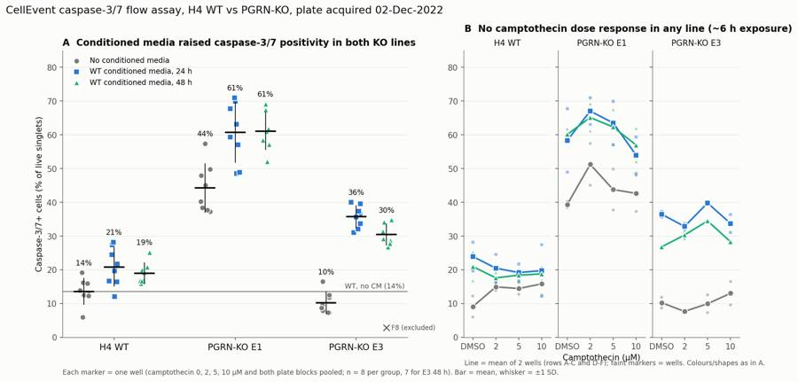
138
tool call · Bash
cd /task; python3 - <<'EOF'
import re
s=open('scripts/figure.py').read()
s=s.replace("fig.text(0.585,0.93,'B No camptothecin dose response in any line (~6 h exposure)'","fig.text(0.585,0.905,'B No camptothecin dose response in any line'")
s=s.replace("fig.text(0.585,0.035,'Line = mean of 2 wells (rows A-C and D-F); faint markers = wells. Colours/shapes as in A.'","fig.text(0.585,-0.035,'Line = mean of 2 wells (rows A-C and D-F); faint markers = wells. Colours/shapes as in A.\\nExposure ≈5-6 h (inferred from plan timing: added after 24 h CM, acquired 14:33-15:32).'")
s=s.replace("'Each marker = one well (camptothecin 0, 2, 5, 10 µM and both plate blocks pooled; n = 8 per group, 7 for E3 48 h). Bar = mean, whisker = ±1 SD.'","'Each marker = one well (DMSO, 2, 5, 10 µM camptothecin and both plate blocks pooled;\\nn = 8 per group, 7 for E3 48 h). Bar = mean, whisker = ±1 SD.'")
s=s.replace("ax.text(0,-0.13,","ax.text(0,-0.16,")
open('scripts/figure.py','w').write(s)
EOF
python3 scripts/figure.py139
tool output
(Bash completed with no output)
140
tool call · Read
{
"file_path": "/task/outputs/figure.png"
}141
tool output
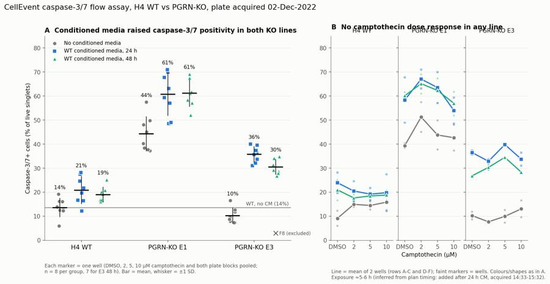
143
tool call · Bash
cd /task; sed -i "s/fig.text(0.585,0.905,'B/fig.text(0.585,0.948,'B/" scripts/figure.py; sed -i "s/ax.set_title('A Conditioned media raised caspase-3\/7 positivity in both KO lines',loc='left',fontsize=11.5,color=INK,fontweight='bold')/ax.set_title('A Conditioned media raised caspase-3\/7 positivity in both KO lines',loc='left',fontsize=11.5,color=INK,fontweight='bold',pad=22)/" scripts/figure.py; python3 scripts/figure.py144
tool output
(Bash completed with no output)
145
agent
Fixing figure title overlap, then I'll write a supplementary gating plot and the report.
146
tool call · Read
{
"file_path": "/task/outputs/figure.png"
}147
tool output
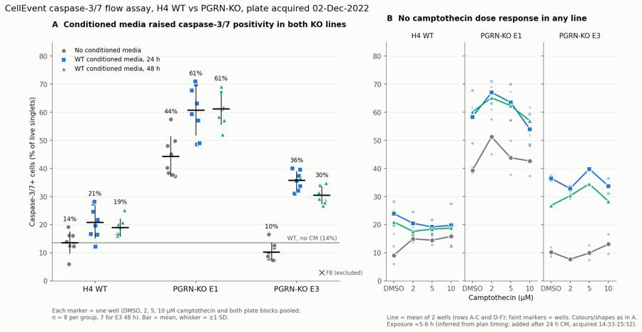
149
tool call · Bash
cd /task; cat > scripts/gating_fig.py <<'EOF'
import flowkit as fk, pandas as pd, numpy as np, matplotlib
matplotlib.use('Agg'); import matplotlib.pyplot as plt
from matplotlib.colors import LogNorm
g=fk.parse_gating_xml('/task/outputs/gates.xml')
wells=['A12','B12','C12','B2','G1','G7','G8']
a=lambda v: np.arcsinh(v/150.)
fig,axes=plt.subplots(3,len(wells),figsize=(3.6*len(wells),10.5))
for j,w in enumerate(wells):
s=fk.Sample(f'/task/inputs/raw/Caspase-assay-2-mlk_caspase_Group_{w}.fcs')
r=g.gate_sample(s)
raw=pd.DataFrame(s.get_events(source='raw'),columns=s.pnn_labels)
cells=r.get_gate_membership('cells'); sing=r.get_gate_membership('singlets')
bl1=raw['BL1-A'].values-0.0003*raw['BL2-A'].values; bl2=raw['BL2-A'].values-0.89*raw['BL1-A'].values # display only (= matrix inverse to <0.03%)
ax=axes[0,j]; ax.hist2d(raw['FSC-A'],raw['SSC-A'],bins=200,range=[[0,1.05e6],[0,1.05e6]],norm=LogNorm(),cmap='viridis')
v=np.array([(75000,25000),(1040000,25000),(1040000,1040000),(75000,1040000),(75000,25000)]); ax.plot(v[:,0],v[:,1],'r-',lw=1)
ax.set_title(f'{w} cells {100*cells.mean():.0f}%',fontsize=9); ax.set_xlabel('FSC-A'); ax.set_ylabel('SSC-A')
ax=axes[1,j]; d=raw[cells]; ax.hist2d(d['FSC-A'],d['FSC-H'],bins=200,range=[[0,1.05e6],[0,7e5]],norm=LogNorm(),cmap='viridis')
v=np.array([(75000,30000),(300000,135000),(500000,215000),(700000,280000),(1040000,380000),(1040000,700000),(75000,700000),(75000,30000)]); ax.plot(v[:,0],v[:,1],'r-',lw=1)
ax.set_title(f'singlets {100*sing.sum()/cells.sum():.0f}% of cells',fontsize=9); ax.set_xlabel('FSC-A'); ax.set_ylabel('FSC-H')
ax=axes[2,j]; ax.hist2d(a(bl1[sing]),a(bl2[sing]),bins=150,range=[[-2,9],[-5,9]],norm=LogNorm(),cmap='viridis')
ax.axhline(a(30000),color='r',lw=1); ax.plot([a(1000),a(1000)],[-5,a(30000)],'r-',lw=1)
live=r.get_gate_membership('live'); cp=r.get_gate_membership('caspase_pos')
ax.set_title(f'casp+ {100*cp.sum()/live.sum():.1f}% of live; dead {100*(sing.sum()-live.sum())/sing.sum():.1f}%',fontsize=9)
ax.set_xlabel('BL1-A comp, CellEvent casp-3/7 (asinh/150)'); ax.set_ylabel('BL2-A comp, SYTOX AADv (asinh/150)')
for ax in axes[:,j]: ax.tick_params(labelsize=7)
plt.suptitle('Gating (gates.xml): cells -> singlets -> live (comp BL2-A < 30000) -> caspase_pos (comp BL1-A >= 1000). Wells: A12 WT, B12 E1, C12 E3 (DMSO, no CM), B2 E1+CM24 5uM, G1 unstained, G7 caspase-only, G8 SYTOX-only',fontsize=10)
plt.tight_layout(); plt.savefig('/task/outputs/gating_example.png',dpi=80)
EOF
python3 scripts/gating_fig.py150
tool output
(Bash completed with no output)
151
tool call · Read
{
"file_path": "/task/outputs/gating_example.png"
}152
tool output
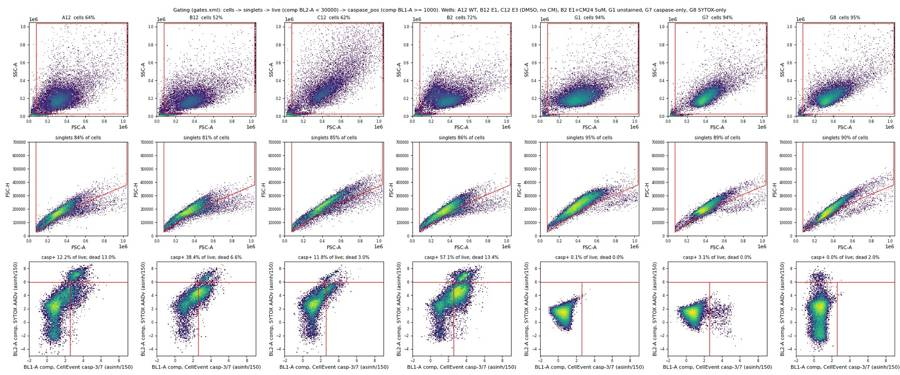
154
tool call · Bash
cd /task; python3 -c "
import pandas as pd
W=pd.read_csv('work/per_well_metrics.csv').set_index('well')
m=W[W.row.isin(list('ABCDEF'))].drop(['F8'])
print(m.groupby('row').casp_live.mean().round(1))
print(m.groupby(['row','cm']).casp_live.mean().unstack().round(1))
f=pd.read_csv('work/features.csv').set_index('well')
print('debris A-F',f.loc[m.index,'debris'].min().round(1),f.loc[m.index,'debris'].max().round(1),' G',f.loc[[w for w in f.index if w[0]=='G'],'debris'].round(1).to_dict())
print(f.loc[m.index].groupby(m.cell_line).negBL1.agg(['min','median','max']).round(0))
print(f.groupby(f.index.str[0]).debris.mean().round(1))
"
155
tool output
row
A 15.2
B 50.4
C 25.0
D 20.4
E 60.3
F 25.5
Name: casp_live, dtype: float64
cm CM24 CM48 noCM
row
A 16.2 16.6 12.8
B 54.4 57.2 39.6
C 36.3 29.7 9.0
D 25.5 21.3 14.3
E 67.0 65.0 48.9
F 35.1 31.3 11.4
debris A-F 17.0 47.3 G {'G1': 4.1, 'G2': 5.6, 'G3': 10.1, 'G4': 10.5, 'G5': 13.5, 'G6': 11.5, 'G7': 4.9, 'G8': 3.5}
min median max
cell_line
E1 240.0 344.0 529.0
E3 214.0 347.0 388.0
WT 152.0 173.0 191.0
well
A 28.6
B 31.0
C 35.6
D 29.7
E 33.0
F 38.1
G 7.9
Name: debris, dtype: float64157
tool call · Write
{
"file_path": "/task/outputs/report.md",
"content": "# Caspase-3/7 conditioned-media plate, H4 WT vs PGRN-KO (E1, E3), acquired 02-Dec-2022\n\n## Question\nThe plan asks whether conditioned media (CM) from WT H4 cells, which contains progranulin, can bring caspase-3/7 activity in the H4 PGRN-KO lines E1 and E3 back toward WT levels. It also asks whether this holds with and without a camptothecin challenge (DMSO, 2, 5 or 10 \u00b5M).\n\n## Methods\n- **Data.** 80 Attune NxT FCS 3.1 files (wells A1\u2013F12, G1\u2013G8), acquired 14:33\u201315:32 in plate order. Every well ran for a fixed volume of about 133\u2013142 \u00b5L and gave 11.6k\u201347.3k events.\n- **Which detector measured what.** The FCS label for BL1 (\"AAV-GFP-GFP\") is out of date. The plan's reagent list and cytometer settings match the voltages stored in the files (FSC 20, SSC 290, BL1 225, BL2 350). On that basis:\n - **BL1-A** is CellEvent Caspase-3/7 Green (caspase).\n - **BL2-A** is SYTOX AADvanced (dead-cell stain).\n- **Compensation.** The file's own spillover matrix is the identity, so it was not used. I estimated a 2\u00d72 spillover matrix from the single-stain controls, using singlet events and the difference in medians between positive and negative events:\n - G7 (caspase only): BL1\u2192BL2 = 0.89. The estimate was stable at 0.885\u20130.90 across positive thresholds from 1000 to 4000.\n - G8 (SYTOX only): BL2\u2192BL1 = 0.0003.\n - The matrix is stored in `gates.xml` as `spill_G7G8`. Fluorescence gates use it; scatter gates are uncompensated.\n- **Gating.** One strategy (`gates.xml`, FlowKit 1.2.3) was applied unchanged to all 80 files. `counts.csv` comes from `gate_sample` on the re-loaded XML. The gates are:\n 1. `cells` (polygon on FSC-A/SSC-A). Keeps FSC-A 75k\u20131.04M and SSC-A 25k\u20131.04M. This removes debris, a low-SSC noise streak, and off-scale events (\u22651,048,575).\n 2. `singlets` (polygon on FSC-A/FSC-H). Excludes doublets below a curved diagonal.\n 3. `live` (compensated BL2-A < 30,000). Among caspase+ cells, SYTOX staining has two modes: dim at about 5\u201315k and bright at about 80k+. The cut sits in the valley between them, which is in the same place for all three lines.\n 4. `caspase_pos` = **marker_positive**, inside `live`: compensated BL1-A \u2265 1000. This is above the 99.9th percentile of the caspase-FMO well G8 (814) and of the unstained well G1 (778).\n 5. Other gates: `dead` (SYTOX-bright singlets), `dead_caspase_pos` (caspase+ within dead) and `caspase_pos_all` (caspase+ among all singlets).\n- **Per-well metric.** % caspase-3/7+ of live singlets = 100 \u00d7 caspase_pos / live. A secondary metric, % caspase+ of all singlets (caspase_pos_all / singlets), was used as a check. No normalisation was applied.\n- **Conditions.** Each condition is a cell line \u00d7 CM group (none, WT CM 24 h, WT CM 48 h).\n - Camptothecin had no effect (see Results), so the four camptothecin treatments and both plate blocks (rows A\u2013C and D\u2013F) are pooled: n = 8 wells per condition, 7 for E3 + CM 48 h.\n - The table also lists each dose separately (n = 2).\n - Statistics are Welch t-tests and Mann-Whitney U tests on the wells. The wells are technical replicates on one plate, so p-values are descriptive only.\n- **QC.**\n - Event rate over time showed no clogs, gaps or wells running dry.\n - Fluorescence channels never saturated (\u22640.3% of events).\n - Off-scale scatter events were counted per well.\n - Each well's cell-line identity was checked from its scatter signature using a nearest-centroid classifier on four scatter features. A leave-one-out check gave 0 errors in rows A\u2013F.\n - The FCS metadata contains an operator name; it is not reproduced here.\n\n## Results\n**1. Neither WT conditioned medium moved the KO lines toward WT. Both raised the caspase+ fraction, most of all in the KO lines** (figure panel A; `condition_summary.csv`).\n\n| Line | No CM | WT CM 24 h | WT CM 48 h | CM \u2212 no CM (95% CI) |\n|---|---|---|---|---|\n| WT | 13.6 \u00b1 3.9 % | 20.8 \u00b1 5.7 % | 18.9 \u00b1 3.1 % | +7.2 (\u00b15.3) / +5.3 (\u00b13.8) pts |\n| E1 | 44.2 \u00b1 7.2 % | 60.7 \u00b1 8.8 % | 61.1 \u00b1 5.5 % | +16.4 (\u00b18.7) / +16.9 (\u00b16.9) pts, p \u2264 0.003 |\n| E3 | 10.2 \u00b1 3.2 % | 35.7 \u00b1 3.3 % | 30.4 \u00b1 3.1 % (n=7) | +25.5 (\u00b13.5) / +20.2 (\u00b13.5) pts, p < 0.001 |\n\n- **E1.** E1 shows the expected KO phenotype: without CM it is 3.3\u00d7 WT (+30.7 \u00b1 6.4 pts). With CM the gap to WT grew rather than closed: 39.8 / 42.2 pts against WT given the same CM, or about 47 pts against WT without CM.\n- **E3.** Without CM, E3 was not above WT (10.2 vs 13.6%, p = 0.08), so there was no excess caspase activity to rescue. CM raised E3 about 3-fold.\n- **24 h vs 48 h CM.** No meaningful difference in either KO line.\n- **Consistency across blocks.** The CM effect is the same in both plate blocks: E1 +16.2 (row B) and +17.1 (row E); E3 +24.0 (row C) and +22.1 (row F). Within each KO row, every CM well was above every no-CM well.\n- **Robustness.** The direction holds for:\n - the secondary metric, % caspase+ of all singlets: E1 +20.5 / +20.2, E3 +30.3 / +23.3, WT +5.1 / +4.2 (WT not significant);\n - caspase thresholds from 700 to 2000 (E1 +15 to +17, E3 +13 to +29, WT +4 to +8 pts);\n - live/dead cut-offs of 15k or 50k;\n - DMSO wells alone (E1 39 \u2192 58 / 60%, E3 10 \u2192 36 / 27%).\n- **Cell death.** CM also roughly tripled the SYTOX-bright dead fraction in the KO lines (E1 6.6 \u2192 19.5 / 18.1%, E3 6.8 \u2192 15.8 / 12.3%) but not in WT (11.4 \u2192 9.9 / 10.7%).\n\n**2. Camptothecin had no effect at any dose in any line** (panel B).\n- Paired within each row \u00d7 CM block, 10 \u00b5M minus DMSO was \u22120.3 \u00b1 5.8 pts (17 blocks, p = 0.82).\n- Regression slopes per 10 \u00b5M were WT +0.2, E1 \u22124.3 \u00b1 2.7 and E3 +0.9 pts.\n- Assuming camptothecin went in about 24 h after the 09:00 CM addition (the plan gives no
… [6,808 more characters not shown]158
tool output
File created successfully at: /task/outputs/report.md (file state is current in your context — no need to Read it back)
160
tool call · Bash
cd /task/outputs; sed -i 's/caspase thresholds from 700 to 2000 (E1 +15 to +17, E3 +13 to +29, WT +4 to +8 pts)/caspase thresholds from 700 to 2000 (E1 +15 to +18, E3 +11 to +29, WT +3 to +8 pts)/; s/but its size does (E3 +13 to +29 pts)/but its size does (E3 +11 to +29 pts)/' report.md; grep -n "+11 to +29" report.md
161
tool output
48: - caspase thresholds from 700 to 2000 (E1 +15 to +18, E3 +11 to +29, WT +3 to +8 pts); 96:- **The caspase threshold matters for magnitude.** Caspase staining in E1/E3 is a continuum that crosses the 1000 threshold. The direction of the CM effect does not depend on the threshold, but its size does (E3 +11 to +29 pts). [This command modified 1 file you've previously read: report.md. Call Read before editing.]
162
agent
Report written; now writing answer.json and running final consistency checks on all deliverables.
163
tool call · Bash
cd /task; cat > scripts/answer.py <<'EOF'
import json, pandas as pd
R=pd.read_csv('/task/work/stats_main.csv')
excl=json.load(open('/task/work/excluded.json'))['excluded']
def g(a,b):
r=R[(R.a==a)&(R.b==b)].iloc[0]; return r
def mag(a,b,extra=''):
r=g(a,b); return f"{r['diff']:+.1f} percentage points of live singlets ({r.mean_a:.1f}% -> {r.mean_b:.1f}%, 95% CI ±{r.ci95:.1f} pts, {r.fold:.2f}-fold; n={int(r.n_a)} vs {int(r.n_b)} wells){extra}"
cs=lambda a: f"{a}_all_doses"
comps=[
dict(comparison="E1 KO: WT 24 h conditioned media vs no conditioned media",a=cs('E1_noCM'),b=cs('E1_CM24'),direction='increase',magnitude=mag('E1_noCM','E1_CM24'),confidence='high'),
dict(comparison="E1 KO: WT 48 h conditioned media vs no conditioned media",a=cs('E1_noCM'),b=cs('E1_CM48'),direction='increase',magnitude=mag('E1_noCM','E1_CM48'),confidence='high'),
dict(comparison="E3 KO: WT 24 h conditioned media vs no conditioned media",a=cs('E3_noCM'),b=cs('E3_CM24'),direction='increase',magnitude=mag('E3_noCM','E3_CM24'),confidence='high'),
dict(comparison="E3 KO: WT 48 h conditioned media vs no conditioned media",a=cs('E3_noCM'),b=cs('E3_CM48'),direction='increase',magnitude=mag('E3_noCM','E3_CM48',' (F8 excluded)'),confidence='high'),
dict(comparison="WT: WT 24 h conditioned media vs no conditioned media",a=cs('WT_noCM'),b=cs('WT_CM24'),direction='increase',magnitude=mag('WT_noCM','WT_CM24'),confidence='medium'),
dict(comparison="WT: WT 48 h conditioned media vs no conditioned media",a=cs('WT_noCM'),b=cs('WT_CM48'),direction='increase',magnitude=mag('WT_noCM','WT_CM48'),confidence='medium'),
dict(comparison="Basal KO phenotype: E1 vs WT, no conditioned media",a=cs('WT_noCM'),b=cs('E1_noCM'),direction='increase',magnitude=mag('WT_noCM','E1_noCM'),confidence='high'),
dict(comparison="Basal KO phenotype: E3 vs WT, no conditioned media",a=cs('WT_noCM'),b=cs('E3_noCM'),direction='no_clear_change',magnitude=mag('WT_noCM','E3_noCM',' ; Welch p=0.08, not elevated'),confidence='medium'),
dict(comparison="Gap to WT under matched 24 h CM: E1+CM24 vs WT+CM24 (gap without CM was +30.7 pts)",a=cs('WT_CM24'),b=cs('E1_CM24'),direction='increase',magnitude=mag('WT_CM24','E1_CM24',' ; KO-WT gap widened by 9.2 pts'),confidence='high'),
dict(comparison="Gap to WT under matched 24 h CM: E3+CM24 vs WT+CM24 (gap without CM was -3.4 pts)",a=cs('WT_CM24'),b=cs('E3_CM24'),direction='increase',magnitude=mag('WT_CM24','E3_CM24',' ; KO-WT gap widened by 18.2 pts'),confidence='high'),
dict(comparison="Camptothecin challenge: WT no CM, 10 uM vs DMSO",a='WT_noCM_DMSO',b='WT_noCM_10uM',direction='no_clear_change',magnitude="+6.7 percentage points (9.1% -> 15.8%, n=2 vs 2, driven by low D12); across all 17 row x CM blocks and lines, 10 uM - DMSO = -0.3 ± 5.8 pts (p=0.82), regression slope per 10 uM: WT +0.2, E1 -4.3, E3 +0.9 pts",confidence='medium'),
dict(comparison="Camptothecin challenge: E1 no CM, 10 uM vs DMSO",a='E1_noCM_DMSO',b='E1_noCM_10uM',direction='no_clear_change',magnitude="+3.3 percentage points (39.3% -> 42.6%, n=2 vs 2; within-pair SD up to 7.6 pts)",confidence='medium'),
]
cond=set(pd.read_csv('/task/outputs/condition_summary.csv').condition)
for c in comps: assert c['a'] in cond and c['b'] in cond, c
A=dict(
question="Can WT progranulin-conditioned media bring caspase-3/7 activity in H4 PGRN-KO lines (E1, E3) back toward WT levels (with or without camptothecin challenge)?",
comparisons=comps,
overall_answer="no: WT conditioned media (24 h or 48 h) did not move either KO line toward WT - it increased caspase-3/7+ live cells in E1 from 44% to 61% (+16-17 pts) and in E3 from 10% to 30-36% (+20-25 pts), while WT rose only 5-7 pts (14% -> 19-21%), so the KO-WT gap widened; the effect was identical in both plate blocks and both CM harvests, consistent with a non-specific spent-media/handling stress, and camptothecin (2-10 uM, ~5-6 h) produced no response, so the challenge arm is uninformative.",
assay_verdict="needs_optimisation",
next_action="repeat_with_change",
next_change=dict(
what="Comparator (control arm) for the WT-conditioned-media treatment",
**{"from":"WT CM (24 h / 48 h spent medium) compared only against wells given no conditioned media (cols 9-12, different plate position); progranulin content of CM not measured"},
to="WT CM vs PGRN-KO (E1/E3)-conditioned media vs fresh-media mock exchange, all conditioned for the same time, washed and handled identically and interleaved on the plate, with progranulin in each CM batch quantified by ELISA (plus a recombinant-PGRN arm if available)",
why="CM raised caspase+ by 16-25 pts in both KO lines with the same size in both plate blocks and both harvests, which looks like a non-specific spent-media/handling effect (untouched row-G wells were only 2-4% caspase+); only a progranulin-null CM comparator handled identically can isolate a progranulin-specific rescue. In the same repeat, extend camptothecin to ~24 h (no dose response at ~5-6 h) and read SYTOX AADvanced in BL3."),
excluded_wells=excl,
caveats=[
"Camptothecin (2-10 uM) gave no dose response in any line (10 uM - DMSO = -0.3 ± 5.8 pts); exposure was only ~5-6 h (inferred from plan timing), so there is no working positive control for induced apoptosis.",
"CM vs no-CM is confounded with plate columns (1-8 vs 9-12) and with spent vs fresh medium; no KO-conditioned or mock-exchange control, and PGRN concentration in CM was not measured.",
"CM provenance ambiguity: the 11-28/11-30 plate maps suggest rows E/F (E1/E3) may have received media conditioned by the same KO line; analysis follows the 12-02 legend (all WT CM); rows B/E and C/F show identical CM effects either way.",
"Single plate, technical replicate wells sharing cell suspensions and CM batches; p-values are descriptive. Row/acquisition-order effect of +5 to +10 pts (rows D-E vs A-B) is balanced across CM conditions.",
"SYTOX AADvanced was read in BL2 with 0.89 spillover from CellEvent green; compensation from weak WT-
… [1,067 more characters not shown]164
tool output
{
"question": "Can WT progranulin-conditioned media bring caspase-3/7 activity in H4 PGRN-KO lines (E1, E3) back toward WT levels (with or without camptothecin challenge)?",
"comparisons": [
{
"comparison": "E1 KO: WT 24 h conditioned media vs no conditioned media",
"a": "E1_noCM_all_doses",
"b": "E1_CM24_all_doses",
"direction": "increase",
"magnitude": "+16.4 percentage points of live singlets (44.2% -> 60.7%, 95% CI \u00b18.7 pts, 1.37-fold; n=8 vs 8 wells)",
"confidence": "high"
},
{
"comparison": "E1 KO: WT 48 h conditioned media vs no conditioned media",
"a": "E1_noCM_all_doses",
"b": "E1_CM48_all_doses",
"direction": "increase",
"magnitude": "+16.9 percentage points of live singlets (44.2% -> 61.1%, 95% CI \u00b16.9 pts, 1.38-fold; n=8 vs 8 wells)",
"confidence": "high"
},
{
"comparison": "E3 KO: WT 24 h conditioned media vs no conditioned media",
"a": "E3_noCM_all_doses",
"b": "E3_CM24_all_doses",
"direction": "increase",
"magnitude": "+25.5 percentage points of live singlets (10.2% -> 35.7%, 95% CI \u00b13.5 pts, 3.49-fold; n=8 vs 8 wells)",
"confidence": "high"
},
{
"comparison": "E3 KO: WT 48 h conditioned media vs no conditioned media",
"a": "E3_noCM_all_doses",
"b": "E3_CM48_all_doses",
"direction": "increase",
"magnitude": "+20.2 percentage points of live singlets (10.2% -> 30.4%, 95% CI \u00b13.5 pts, 2.97-fold; n=8 vs 7 wells) (F8 excluded)",
"confidence": "high"
},
{
"comparison": "WT: WT 24 h conditioned media vs no conditioned media",
"a": "WT_noCM_all_doses",
"b": "WT_CM24_all_doses",
"direction": "increase",
"magnitude": "+7.2 percentage points of live singlets (13.6% -> 20.8%, 95% CI \u00b15.3 pts, 1.53-fold; n=8 vs 8 wells)",
"confidence": "medium"
},
{
"comparison": "WT: WT 48 h conditioned media vs no conditioned media",
"a": "WT_noCM_all_doses",
"b": "WT_CM48_all_doses",
"direction": "increase",
"magnitude": "+5.3 percentage points of live singlets (13.6% -> 18.9%, 95% CI \u00b13.8 pts, 1.39-fold; n=8 vs 8 wells)",
"confidence": "medium"
},
{
"comparison": "Basal KO phenotype: E1 vs WT, no conditioned media",
"a": "WT_noCM_all_doses",
"b": "E1_noCM_all_doses",
"direction": "increase",
"magnitude": "+30.7 percentage points of live singlets (13.6% -> 44.2%, 95% CI \u00b16.4 pts, 3.26-fold; n=8 vs 8 wells)",
"confidence": "high"
},
{
"comparison": "Basal KO phenotype: E3 vs WT, no conditioned media",
"a": "WT_noCM_all_doses",
"b": "E3_noCM_all_doses",
"direction": "no_clear_change",
"magnitude": "-3.4 percentage points of live singlets (13.6% -> 10.2%, 95% CI \u00b13.8 pts, 0.75-fold; n=8 vs 8 wells) ; Welch p=0.08, not elevated",
"confidence": "medium"
},
{
"comparison": "Gap to WT under matched 24 h CM: E1+CM24 vs WT+CM24 (gap without CM was +30.7 pts)",
"a": "WT_CM24_all_doses",
"b": "E1_CM24_all_doses",
"direction": "increase",166
tool call · Bash
cd /task; python3 - <<'EOF'
import pandas as pd, json, flowkit as fk, re
C=pd.read_csv('outputs/counts.csv',keep_default_na=False)
print(list(C.columns), len(C), C.file.nunique())
print(C.groupby(['population','role','parent']).size())
assert (C[C.population=='all_events'].pct_of_parent=='').all()
# roles unique
r=C[C.role!='other'].groupby('role').population.unique(); print(r)
# recheck pct
P=C.pivot(index='file',columns='population',values='count').astype(int)
for _,x in C[C.population!='all_events'].iterrows():
exp=100*x['count']/P.loc[x.file,x.parent]; assert abs(float(x.pct_of_parent)-exp)<1e-3
# recompute counts with reloaded gates on 3 files
g=fk.parse_gating_xml('outputs/gates.xml')
for f in C.file.unique()[[0,40,79]]:
s=fk.Sample('inputs/raw/'+f); res=g.gate_sample(s)
for p in ['cells','singlets','live','caspase_pos','dead','dead_caspase_pos','caspase_pos_all']:
assert res.get_gate_count(p, g.find_matching_gate_paths(p)[0])==P.loc[f,p]
print('counts reproduce OK')
F=pd.read_csv('outputs/flags.csv',keep_default_na=False)
print(list(F.columns),len(F),F.issue_type.value_counts().to_dict(),F.decision.value_counts().to_dict())
assert ((F.issue_type!='none')|(F.decision=='keep')).all()
assert all(re.search(r'\d',e) for e in F[F.issue_type!='none'].evidence)
A=json.load(open('outputs/answer.json'))
assert set(A['excluded_wells'])==set(F[F.decision=='exclude'].well)
S=pd.read_csv('outputs/condition_summary.csv',keep_default_na=False)
print(list(S.columns),len(S)); assert (S[S.n_wells_used==1].sd=='').all()
# excluded wells not in any condition
used=set(';'.join(S.wells).split(';')); print('excluded in summary?',used & set(A['excluded_wells']))
print(A['next_action'],A['assay_verdict'],A['overall_answer'][:4], list(A['next_change'].keys()))
rep=open('outputs/report.md').read()
print([h for h in re.findall(r'^## .*',rep,flags=re.M)])
EOF
ls -la outputs167
tool output
<stdin>:11: RuntimeWarning: invalid value encountered in scalar divide ['file', 'well', 'population', 'role', 'parent', 'count', 'pct_of_parent'] 640 80 population role parent all_events other none 80 caspase_pos marker_positive live 80 caspase_pos_all other singlets 80 cells cells all_events 80 dead other singlets 80 dead_caspase_pos other dead 80 live live singlets 80 singlets singlets cells 80 dtype: int64 role cells [cells] live [live] marker_positive [caspase_pos] singlets [singlets] Name: population, dtype: object Traceback (most recent call last): File "<stdin>", line 11, in <module> ValueError: could not convert string to float: '' total 656 drwxr-xr-x 2 root root 4096 Nov 10 17:24 . drwxr-xr-x 6 root root 4096 Nov 10 17:09 .. -rw-r--r-- 1 root root 7829 Nov 10 17:24 answer.json -rw-r--r-- 1 root root 15561 Nov 10 17:21 condition_summary.csv -rw-r--r-- 1 root root 52322 Nov 10 17:17 counts.csv -rw-r--r-- 1 root root 207258 Nov 10 17:22 figure.png -rw-r--r-- 1 root root 9100 Nov 10 17:21 flags.csv -rw-r--r-- 1 root root 4707 Nov 10 17:17 gates.xml -rw-r--r-- 1 root root 338949 Nov 10 17:22 gating_example.png -rw-r--r-- 1 root root 12338 Nov 10 17:24 report.md
169
tool call · Bash
cd /task; grep -n "if pc>0 else ''" scripts/build_gates.py; sed -i "s/if pc>0 else ''/if pc>0 else 0.0/" scripts/build_gates.py; python3 scripts/build_gates.py > /dev/null && python3 -c "
import pandas as pd
C=pd.read_csv('outputs/counts.csv',keep_default_na=False)
z=C[(C.population!='all_events')]
print(z[z['count']==0][['well','population','parent','count','pct_of_parent']].head(10))
"170
tool output
64: rows.append(dict(file=f,well=w,population=p,role=role,parent=par,count=cnt[p],pct_of_parent=round(100*cnt[p]/pc,4) if pc>0 else ''))
well population parent count pct_of_parent
581 G1 dead singlets 0 0.0
582 G1 dead_caspase_pos dead 0 0.0
629 G7 dead singlets 0 0.0
630 G7 dead_caspase_pos dead 0 0.0171
tool call · Bash
cd /task; python3 scripts/analyse.py > work/analyse_log.txt && python3 scripts/answer.py > /dev/null && python3 - <<'EOF'
import pandas as pd, json, flowkit as fk, re
C=pd.read_csv('outputs/counts.csv',keep_default_na=False)
P=C.pivot(index='file',columns='population',values='count').astype(int)
for _,x in C[C.population!='all_events'].iterrows():
pc=P.loc[x.file,x.parent]; exp=100*x['count']/pc if pc else 0
assert abs(float(x.pct_of_parent)-exp)<1e-3
g=fk.parse_gating_xml('outputs/gates.xml')
for f in C.file.unique():
s=fk.Sample('inputs/raw/'+f); res=g.gate_sample(s)
for p in ['cells','singlets','live','caspase_pos','dead','dead_caspase_pos','caspase_pos_all']:
assert res.get_gate_count(p, g.find_matching_gate_paths(p)[0])==P.loc[f,p]
assert s.event_count==P.loc[f,'all_events']
print('all 80 files: counts reproduce from reloaded gates.xml')
F=pd.read_csv('outputs/flags.csv',keep_default_na=False)
print(list(F.columns),len(F),F.issue_type.value_counts().to_dict(),F.decision.value_counts().to_dict())
assert ((F.issue_type!='none')|(F.decision=='keep')).all()
assert all(re.search(r'\d',e) for e in F[F.issue_type!='none'].evidence)
A=json.load(open('outputs/answer.json'))
assert set(A['excluded_wells'])==set(F[F.decision=='exclude'].well)
S=pd.read_csv('outputs/condition_summary.csv',keep_default_na=False)
print(list(S.columns),len(S)); assert (S[S.n_wells_used==1].sd=='').all()
used=set(';'.join(S.wells).split(';')); print('excluded in summary?',used & set(A['excluded_wells']))
for c in A['comparisons']: assert c['a'] in set(S.condition) and c['b'] in set(S.condition)
print(A['next_action'],A['assay_verdict'],A['overall_answer'][:4], A['excluded_wells'])
rep=open('outputs/report.md').read(); print(re.findall(r'^## .*',rep,flags=re.M))
print(F[F.issue_type!='none'][['well','issue_type','decision']].to_string())
EOF172
tool output
all 80 files: counts reproduce from reloaded gates.xml
['file', 'well', 'issue_type', 'evidence', 'decision'] 80 {'none': 65, 'saturation': 9, 'mislabel': 4, 'other': 2} {'keep': 65, 'keep_with_note': 10, 'exclude': 5}
['condition', 'wells', 'n_wells_used', 'mean', 'sd', 'metric_definition', 'normalisation_applied'] 49
excluded in summary? set()
repeat_with_change needs_optimisation no: ['F8', 'G3', 'G4', 'G5', 'G6']
['## Question', '## Methods', '## Results', '## Conclusion', '## Caveats', '## Recommendation']
well issue_type decision
24 C1 saturation keep_with_note
26 C3 saturation keep_with_note
32 C9 saturation keep_with_note
33 C10 saturation keep_with_note
34 C11 saturation keep_with_note
47 D12 other keep_with_note
67 F8 other exclude
68 F9 saturation keep_with_note
69 F10 saturation keep_with_note
70 F11 saturation keep_with_note
71 F12 saturation keep_with_note
74 G3 mislabel exclude
75 G4 mislabel exclude
76 G5 mislabel exclude
77 G6 mislabel exclude174
tool call · Bash
cd /task; python3 - <<'EOF' p='outputs/report.md'; s=open(p).read() old="- **Per-well metric.**" new="- **Zero-count parents.** G1 and G7 contain no SYTOX AADvanced, so their `dead` gate is empty. Where a parent population has 0 events, `pct_of_parent` is written as 0.\n- **Per-well metric.**" assert old in s; s=s.replace(old,new,1); open(p,'w').write(s) EOF mkdir -p outputs/code && cp scripts/*.py outputs/code/ && ls outputs/code; head -c 600 outputs/flags.csv; echo; sed -n 75,78p outputs/flags.csv | cut -c1-400
175
tool output
analyse.py answer.py build_gates.py classify.py comp.py explore2.py explore3.py features.py figure.py fl_overview.py gating_fig.py hist_bl2.py overview.py pool.py prelim.py sensitivity.py singlet_view.py singlet_view2.py timecheck.py timeplot.py zoom.py file,well,issue_type,evidence,decision Caspase-assay-2-mlk_caspase_Group_A1.fcs,A1,none,,keep Caspase-assay-2-mlk_caspase_Group_A2.fcs,A2,none,,keep Caspase-assay-2-mlk_caspase_Group_A3.fcs,A3,none,,keep Caspase-assay-2-mlk_caspase_Group_A4.fcs,A4,none,,keep Caspase-assay-2-mlk_caspase_Group_A5.fcs,A5,none,,keep Caspase-assay-2-mlk_caspase_Group_A6.fcs,A6,none,,keep Caspase-assay-2-mlk_caspase_Group_A7.fcs,A7,none,,keep Caspase-assay-2-mlk_caspase_Group_A8.fcs,A8,none,,keep Caspase-assay-2-mlk_caspase_Group_A9.fcs,A9,none,,keep Caspase-assay-2-mlk_caspase_Group_A10.fcs,A10,none,,keep Caspase-a Caspase-assay-2-mlk_caspase_Group_G2.fcs,G2,none,,keep Caspase-assay-2-mlk_caspase_Group_G3.fcs,G3,mislabel,"Labelled E3 but scatter matches WT/E1, not E3: median SSC-A 202k (E3 wells 263-422k; WT/E1 164-215k), SSC-A off-scale 0.54% (E3 3.3-8.9%; WT/E1 0.09-1.6%), FSC/SSC r=0.51; nearest-centroid on 4 scatter features assigns WT/E1. Mirror image of G5/G6 -> likely E3<->E1 swap of the no-treatment pairs during transfer to the flow plate (11-30 map: E3 Caspase-assay-2-mlk_caspase_Group_G4.fcs,G4,mislabel,"Labelled E3 but scatter matches WT/E1, not E3: median SSC-A 201k (E3 wells 263-422k; WT/E1 164-215k), SSC-A off-scale 0.54% (E3 3.3-8.9%; WT/E1 0.09-1.6%), FSC/SSC r=0.54; nearest-centroid on 4 scatter features assigns WT/E1. Mirror image of G5/G6 -> likely E3<->E1 swap of the no-treatment pairs during transfer to the flow plate (11-30 map: E3 Caspase-assay-2-mlk_caspase_Group_G5.fcs,G5,mislabel,"Labelled E1 but scatter matches E3: median SSC-A 313k, SSC-A off-scale 6.1%, FSC/SSC r=0.72 (E3 no-CM wells C9-C12: 282-335k, 3.5-5.4%, r=0.72-0.74; E1 wells 164-211k, <=1.1%, r<=0.40); nearest-centroid assigns E3. Also 7.5% of events off-scale on scatter. Caspase+ of live 2.4%. Not used in any condition.",exclude
177
agent
The answer is **no**. WT progranulin-conditioned media did not bring caspase activity in E1 or E3 back toward WT. It raised caspase activity in both knockout (KO) lines, so they moved further from WT. All deliverables are in `/task/outputs/`, and the saved gates reproduce every count in `counts.csv` for all 80 files.
**Main result** (% of live single cells that are caspase-3/7 positive; mean of 8 wells, all camptothecin doses pooled):
| Line | No conditioned media | WT media, 24 h | WT media, 48 h |
|---|---|---|---|
| WT | 13.6% | 20.8% | 18.9% |
| E1 | 44.2% | 60.7% | 61.1% |
| E3 | 10.2% | 35.7% | 30.4% (7 wells) |
- **E1** has the expected KO phenotype: 3.3 times WT without conditioned media. With conditioned media it rose about 16–17 points, and the gap to WT widened.
- **E3** was not above WT on this plate, so there was nothing to rescue. Conditioned media raised it 20–25 points.
- **Robustness:** the increase was the same size in both halves of the plate and with 24 h or 48 h media. It held for other gate thresholds and for the DMSO wells alone. It looks like a general stress response to spent, handled media rather than an effect of progranulin.
- **Camptothecin did nothing** at any dose in any line (10 µM minus DMSO: −0.3 ± 5.8 points). Exposure was probably only about 5–6 h, though that is my inference: the plan gives no time for the addition. The challenge half of the experiment is uninformative.
**Data problems found:**
- **Channel labels:** BL1 is labelled "AAV-GFP" in the files but measured the caspase stain. BL2 measured the dead-cell stain (SYTOX AADvanced), with 89% of the caspase signal spilling into it. I estimated the correction from the two single-stain wells (G7, G8).
- **Swapped labels, G3–G6:** by their light-scatter profile, G5/G6 (labelled E1) look like E3, and G3/G4 (labelled E3) look like WT or E1. I excluded all four because their identity can't be confirmed.
- **F8 is an outlier:** 2.9% versus 27–40% in the other 15 E3 wells with conditioned media, plus abnormal scatter. Excluded.
- **Smaller notes:** nine E3 wells have more than 5% of events off the top of the scatter scale (SSC voltage too high), kept with a note. D12 reads low (6.0% vs 12–19% for its replicates), also kept with a note. The untouched row-G wells were only 2–4% positive, so the plate handling itself drives much of the signal.
**Verdict:** the assay needs optimisation. It detects the basal E1 phenotype well but has no working positive control and no matched media control.
**Recommended next step:** repeat with one main change. Compare WT media against media conditioned by the KO lines and against a fresh-media mock exchange, all handled the same way. Measure progranulin in each batch by ELISA. Without that comparison a progranulin effect can't be separated from the spent-media effect seen here. In the same repeat:
- give camptothecin about 24 h;
- read the dead-cell stain in BL3 instead of BL2;
- lower the SSC voltage;
- add unstained and single-stain controls for each line;
- interleave treated and untreated wells across the plate.
**Two uncertainties:**
- **Media source for rows E and F:** the earlier plate maps hint that E1 and E3 in those rows may have received media from their own KO cells. If so, those rows' identical response would support the non-specific explanation.
- **Statistics:** the wells are technical replicates on a single plate, so the p-values are descriptive only.
Files are in `/task/outputs/`:
- gates.xml
- counts.csv
- flags.csv
- condition_summary.csv
- figure.png
- report.md
- answer.json
- gating_example.png (extra: the gates drawn on example wells)
- code/ (extra: the analysis scripts)
final result
The answer is **no**. WT progranulin-conditioned media did not bring caspase activity in E1 or E3 back toward WT. It raised caspase activity in both knockout (KO) lines, so they moved further from WT. All deliverables are in `/task/outputs/`, and the saved gates reproduce every count in `counts.csv` for all 80 files. **Main result** (% of live single cells that are caspase-3/7 positive; mean of 8 wells, all camptothecin doses pooled): | Line | No conditioned media | WT media, 24 h | WT media, 48 h | |---|---|---|---| | WT | 13.6% | 20.8% | 18.9% | | E1 | 44.2% | 60.7% | 61.1% | | E3 | 10.2% | 35.7% | 30.4% (7 wells) | - **E1** has the expected KO phenotype: 3.3 times WT without conditioned media. With conditioned media it rose about 16–17 points, and the gap to WT widened. - **E3** was not above WT on this plate, so there was nothing to rescue. Conditioned media raised it 20–25 points. - **Robustness:** the increase was the same size in both halves of the plate and with 24 h or 48 h media. It held for other gate thresholds and for the DMSO wells alone. It looks like a general stress response to spent, handled media rather than an effect of progranulin. - **Camptothecin did nothing** at any dose in any line (10 µM minus DMSO: −0.3 ± 5.8 points). Exposure was probably only about 5–6 h, though that is my inference: the plan gives no time for the addition. The challenge half of the experiment is uninformative. **Data problems found:** - **Channel labels:** BL1 is labelled "AAV-GFP" in the files but measured the caspase stain. BL2 measured the dead-cell stain (SYTOX AADvanced), with 89% of the caspase signal spilling into it. I estimated the correction from the two single-stain wells (G7, G8). - **Swapped labels, G3–G6:** by their light-scatter profile, G5/G6 (labelled E1) look like E3, and G3/G4 (labelled E3) look like WT or E1. I excluded all four because their identity can't be confirmed. - **F8 is an outlier:** 2.9% versus 27–40% in the other 15 E3 wells with conditioned media, plus abnormal scatter. Excluded. - **Smaller notes:** nine E3 wells have more than 5% of events off the top of the scatter scale (SSC voltage too high), kept with a note. D12 reads low (6.0% vs 12–19% for its replicates), also kept with a note. The untouched row-G wells were only 2–4% positive, so the plate handling itself drives much of the signal. **Verdict:** the assay needs optimisation. It detects the basal E1 phenotype well but has no working positive control and no matched media control. **Recommended next step:** repeat with one main change. Compare WT media against media conditioned by the KO lines and against a fresh-media mock exchange, all handled the same way. Measure progranulin in each batch by ELISA. Without that comparison a progranulin effect can't be separated from the spent-media effect seen here. In the same repeat: - give camptothecin about 24 h; - read the dead-cell stain in BL3 instead of BL2; - lower the SSC voltage; - add unstained and single-stain controls for each line; - interleave treated and untreated wells across the plate. **Two uncertainties:** - **Media source for rows E and F:** the earlier plate maps hint that E1 and E3 in those rows may have received media from their own KO cells. If so, those rows' identical response would support the non-specific explanation. - **Statistics:** the wells are technical replicates on a single plate, so the p-values are descriptive only. Files are in `/task/outputs/`: - gates.xml - counts.csv - flags.csv - condition_summary.csv - figure.png - report.md - answer.json - gating_example.png (extra: the gates drawn on example wells) - code/ (extra: the analysis scripts)